Piquant
A Restaurant, Bar & Café Theme
- created: 11/19/2015
- latest update: 11/26/2015
- by: Mikado Themes
- mikado-themes.com/
- email: support@mikado-themes.com
Piquant – A Restaurant, Bar & Café Theme
1. Getting Started
Hi, and welcome to the Piquant User Guide. The User Guide covers all the information needed to use the Piquant theme to build an amazing website, as well as some helpful tips and tricks that will make your experience working with the Piquant theme easier and more enjoyable. If you need any additional assistance while using our theme, you can always submit a ticket to our support forum at http://mikado.ticksy.com/ and our support team will be glad to help you out.
You can navigate through different sections of the User Guide by clicking on the links in the menu to the left of your screen. You will also notice that we have highlighted certain parts of the text throughout the User Guide, such as important pieces of information, useful tips, and helpful code snippets, with different formating for an easier overview. Here are some examples of the different formating we use for Important Notes, Useful Tips, and Code Snippets:
<div class="code-snippet">This is a helpful code snippet</div>
In this first section of the Piquant User Guide we will go through the essential steps required to start building your website with the Piquant theme. We will explain how to install the theme, import the included demo content, as well as how to update the theme. At the end of this section you will also find a set of Frequently Asked Question related to troubleshooting the theme.
Installing Piquant
After downloading the Piquant installation file from ThemeForest, extract it and in the extracted folder locate the piquant.zip file. You can then install the Piquant theme using one of the two following installation methods:
-
WordPress upload - For most users, this is probably the simplest installation method. To install the Piquant theme using this method, please follow these steps:
- Login to your WordPress admin panel
- Navigate to Appearance > Themes > Add New > Upload Theme
- Click on Choose File and select piquant.zip
- Click on Install Now
-
FTP upload - If you would like to install the Piquant theme via FTP, please follow these steps:
- Extract the piquant.zip file you previously located. You should now see a folder named piquant
- Using an FTP client, login to the server where your WordPress website is hosted
- Using an FTP client, navigate to the /wp-content/themes/ directory under your WordPress website's root directory
- Using an FTP client, upload the previously extracted piquant folder to the themes directory on your remote server
Once the installation is complete, your Piquant theme will be ready for use. Now all you need to do is navigate to Appearance > Themes and activate the Piquant theme. After you have done this, you should see Mikado Options appear in the left navigation bar of your WordPress admin panel.
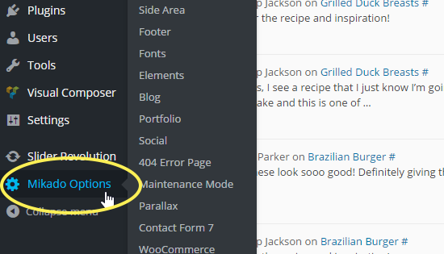
You should also see a notification at the top of the screen that required plugins need to be installed. Please install and activate all of the required plugins, since they are necessary for the theme to function properly.
Importing Demo Content
With the Piquant theme, you have the option to either start creating your site from scratch, or choosing to import one of the included demo sites to use as a starting point, and then modifying it to suit your needs. In this section we will explain how to do the latter.
Piquant comes with a one-click import module. To import one of the included demo sites, please follow these steps:
- Login to your WordPress admin panel
-
Navigate to Mikado Options > Import
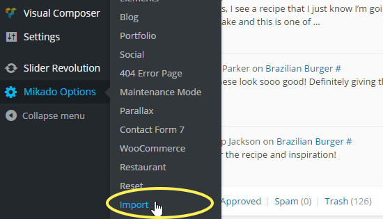
- From the Import dropdown menu, choose the demo site that you would like to import
-
From the Import Type dropdown menu, choose what type of content you'd like to import:
- All - imports pages, content, widgets, and settings. We recommend this for users who would like to import a demo site exactly as it appears on our live demo.
- Content - imports only pages and their content. This option is recommended for users who would like to see how we've created our page layouts, but who want to keep their own settings in Mikado Options.
- Widgets - imports only widgets. This option is recommended for users who would only like to populate the theme’s widget areas with the widgets from their chosen demo. No other content is imported.
- Options - imports settings in Mikado Options only. This option is recommended for users who would like to achieve the same look and feel of their chosen demo site, but do not want to import any additional content.
- If you also wish to import media files (images, videos, sounds), make sure to set the Import attachments option to "Yes".
- Click on the Import button and wait for the import process to finish.
Updating Piquant
You can update your theme by performing the following steps:
- Download the latest theme .zip file from ThemeForest
- Extract it and locate piquant.zip
- Extract piquant.zip and locate the piquant folder
- Copy/Replace the contents of the piquant folder to the /wp-content/themes/piquant folder of your web site.
Troubleshooting FAQ
1. Why can't I save my menu?
WordPress by default has a limited number of menu items. When you import our demo content, which contains a lot of menu items, you might not be able to save changes you make to a menu. You can fix this problem by contacting your hosting and asking them to add the following lines to the php.ini file:
suhosin.post.max_vars = 5000 suhosin.request.max_vars = 5000
2. Why is there a smiley displayed on blank pages?
This problem is most likely related to JetPack and memory settings of your hosting. You can either disable JetPack or read what the JetPack developer wrote: Regarding the memory limit, please refer to the WordPress Codex section concerning this problem. Some sites that load many plugins alongside WordPress ultimately require a higher memory limit than WordPress defaults to, but since this is limited to specific hosts and configurations, it must be dealt with on an individual basis. You'll find the Codex article at: http://codex.wordpress.org/Common_WordPress_Errors#Allowed_memory_size_exhausted
3. How do I optimize my site?
Please use this tool to investigate reasons for slow loading: https://developers.google.com/speed/pagespeed/insights/?hl=en
4. How to translate or rename default theme labels?
You can use the Poedit software (http://poedit.net/wordpress) to translate/rename all the theme's labels. Another solution is to edit the theme folder/languages/en_US.po file directly in a text editor and manually edit the labels you want to translate.
5. Why do I see a white screen when importing demo content?
If you get a white screen or some other error when trying to import our demo content, this probably happens because of the maximum execution time limit. You need to increase the maximum execution time (upload time) setting of your web server. The default maximum execution time on web servers is 30 seconds. Please increase it to 120 seconds. Possible ways of achieving this are:
- By Wp-config.php changes - set_time_limit(120);
- In htaccess - php_value max_execution_time 120;
- In php.ini file - max_execution_time = 120
Ask your hosting provider to take care of this for you.
2. Using Piquant
Once you've installed Piquant, you can start building your site. In this section of the User Guide we will explain how you can set up your header, upload your logo, create your menu, set up your footer area, customize the general look and feel of your website, and create your first pages.
Setting Up the Header
One of the first things you might want to do after you have installed and activated your Piquant theme is to set up your header area. The header contains the logo, menu, search bar, side area icon, and other optional widgets.
To set up your header, navigate to Mikado Options > Header from your WordPress admin panel. The settings you define here will be the default settings for all pages on your site. If you need any help in further understanding any of these options, please refer to the Mikado Options section of this User Guide.
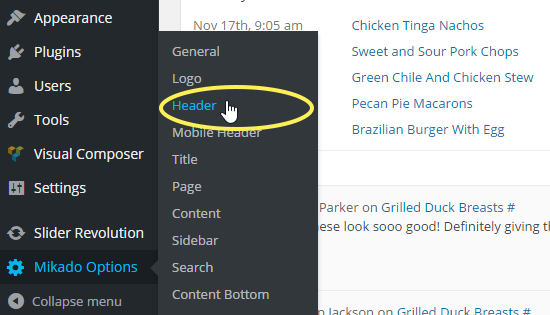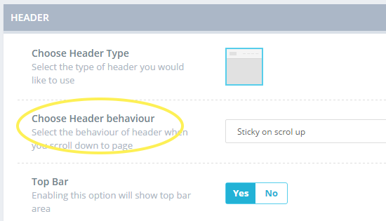
Some options, such as the header skin and background color, can be overridden on a page to page basis from a specific page’s backend. For more information on how local page settings work, please refer to the Pages section of this User Guide.
Uploading Your Logo
To add your logo to the header, navigate to Mikado Options > Logo from your WordPress admin panel and click the upload button next to the Logo Image – Default field. After you upload your image and save the options, you should have a visible logo in your header area. For more information regarding the various logo types that can be uploaded, please refer to the Mikado Options section of this User Guide.
 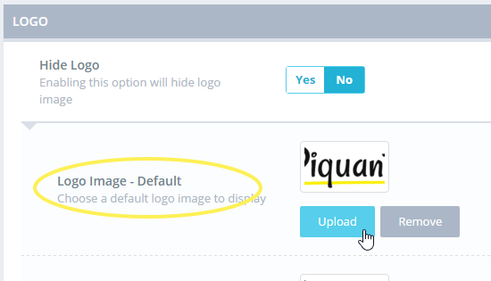
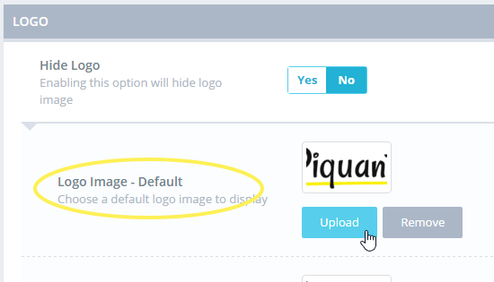
Menu Creation
To create a new menu, navigate to Appearance > Menus from your WordPress admin panel and click on Create a new menu. Enter a name for your new menu and then click Create Menu.
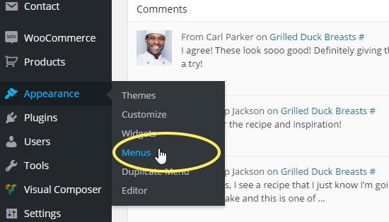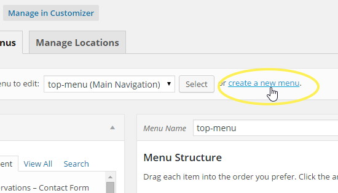
Every page that you have created will be listed in the section on the left named Pages. Simply check the pages that you would like to add to your menu and click the Add to Menu button. Once you have added pages to your menu, you can click and drag the menu items to rearrange them, or nest them one underneath the other.

In the Menu Settings section (which is located underneath the Menu Structure section), check the checkbox next to Main Navigation and click Save Menu. This will activate the menu you have just created, and you should now see a functional menu in your header.
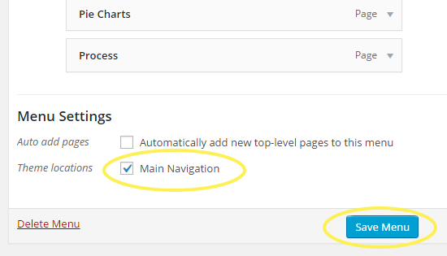
Footer
To set up your footer, navigate to Mikado Options > Footer from your WordPress admin panel.
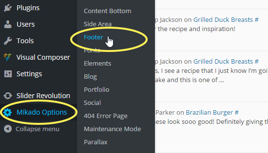
The settings you define here will be the default settings for all pages on your site. If you would like both the top and bottom footer areas to be displayed, make sure that both the Show Footer Top and Show Footer Bottom options are enabled. If you need any help understanding any of these options, please refer to the Mikado Options section of this user guide.
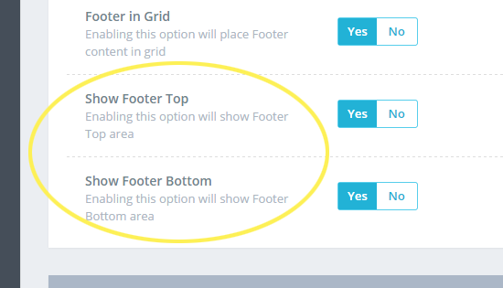
Content is added to your footer via widgets. Navigate to Appearance > Widgets from your WordPress admin panel. On the right side of your page you will see the widget areas for your footer. The widget areas for the top footer are named Footer Column 1, Footer Column 2, Footer Column 3, and Footer Column 4. On the left side of the Widgets page you will see the available widgets. To add a widget to one of the Footer widget areas, simply drag the desired widget to one of the Footer Column widget areas on the right.
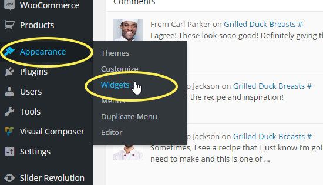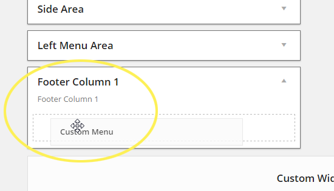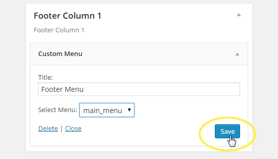
To add content to the bottom footer, simply add widgets to the Footer Bottom widget area, or the Footer Bottom Left and Footer Bottom Right widget areas.
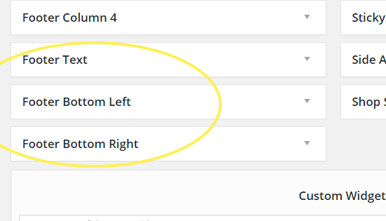
General Look and Feel
Now let’s set up the general look and feel of your site. If you have imported a demo site and would like to keep its general look and feel, then you do not need to do anything else. Otherwise, go to Mikado Options > General and in the Font Family field set a default font family for your site. Next, in the First Main Color field set a default main color for your site.
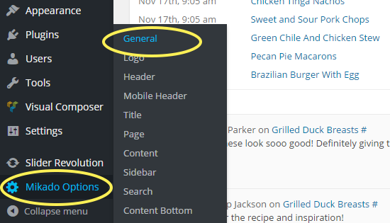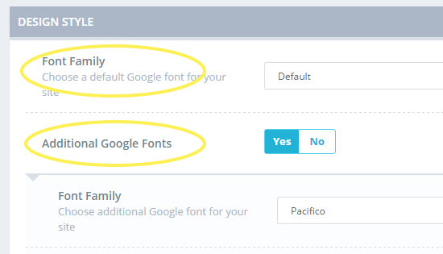
Now that you have set up the basic elements for your site, you’re ready to start building your pages.
Building Pages
To create a new page, navigate to Pages > Add New from your WordPress admin panel. In the text field near the top of the screen enter a title for your page. After you have added a title, choose the “Full width” template from the section on the right named Page Attributes. This will allow you to add sections to your page that span across the whole width of the screen.
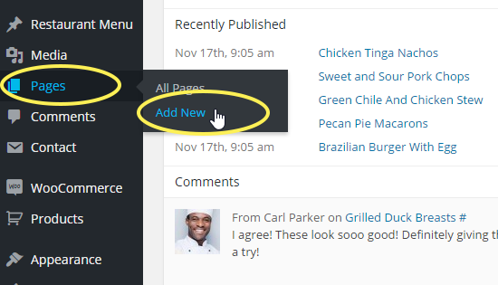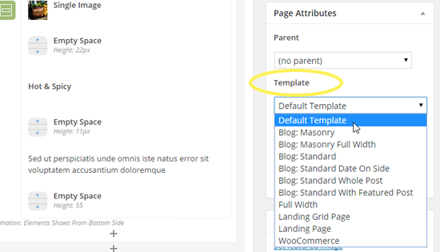
In the bottom section of your screen you will find local page settings. Any settings that you define here will override the global settings set in Mikado Options.
To start adding elements to your page, first make sure that you are in the backend editor view. If the blue button near the top left of the page says BACKEND EDITOR, click on it to enable the Visual Composer page builder view. Once you’re in the Visual Composer view, the blue button will say CLASSIC MODE. You can now click on the Add Element button to start adding elements to your page. You can learn more about elements in the Custom Shortcodes section of this user guide.
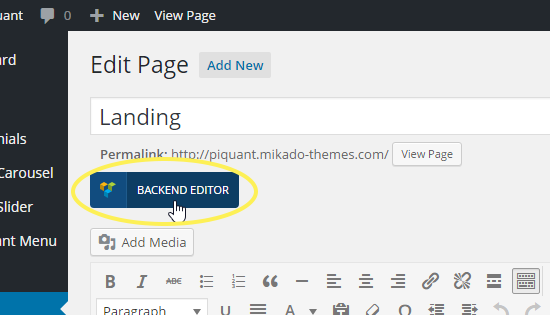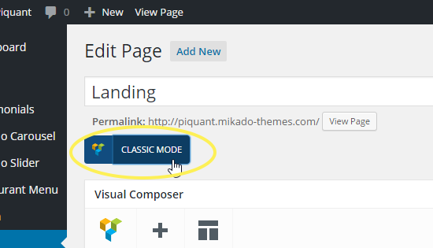
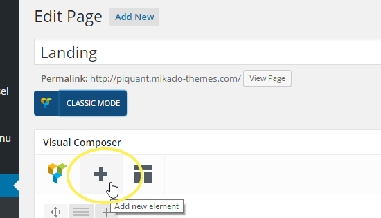
Finally, click the Publish button in the upper right section of the page. (If you made some changes on an already published page, you will see an Update button instead).
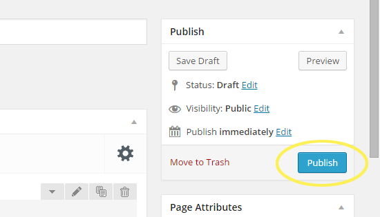
3. Pages
In this section of the User Guide we will discuss page creation in more detail, including the various page templates available in the theme, and all the page specific options.
When creating a new page, one of the first things you will probably want to do is to choose an appropriate template for your page. To this this, visit your page from the backend (or create a new page by going to Pages > Add new), and locate the Page Attributes section on the right side of the screen. Piquant comes with a variety of page templates to choose from:
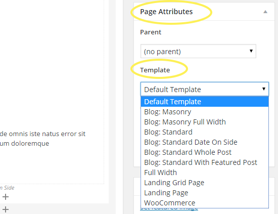
- Default Template - Select this template if you would like to create a standard page with your content inside the grid.
- Blog: Masonry* - Select this template to display a list of your blog posts on the page. The blog list will be displayed in a Masonry type grid.
- Blog: Masonry Full Width* - Select this template to display a list of your blog posts on this page. The blog list will be displayed in a Masonry type grid that spans the width of the page.
- Blog: Standard* - Select this template to display a list of your blog posts on this page. The blog list will be displayed in the Standard layout (post info text located underneath the featured image).
- Blog: Standard Date on Side* - Select this template to display a list of your blog posts on this page. The blog list will be displayed in the Standard layout with the post publication date on the left side.
- Blog: Standard Whole Post* - Select this template to display a list of your blog posts on this page. The blog list will be displayed in the Standard layout, with the whole post text visible on the blog list page.
- Blog: Standard with Featured Post* - Select this template to display a standard blog list with a featured and highlighted latest post.
- Full Width - Select this template if you would like to create a standard page with your content spanning across the full width of the page.
- Landing Grid Page - Select this template if you would like to display a page without a header and footer (only content) with the content in grid.
- Landing Page - Select this template if you would like to display a page without a header and footer (only content) with the content in full width.
- WooCommerce - Select this template for your WooCommerce “Shop” page.
*All of the blog templates listed above are used for displaying blog posts in various manners.
Now that you have chosen an appropriate template, let’s go over the custom fields available for pages.
Mikado Content Bottom
-
Enable Content Bottom Area - Choose "Yes" to enable the content bottom area of your page.
- Sidebar to Display - Choose a custom widget area to display in the content bottom area of your website. You can create custom widget areas by navigating to Appearance > Widgets and there creating your custom widget areas.
- Display in Grid - Set this option to "Yes" if you would like the content bottom to be fitted in a centraly positioned gird.
- Background Color - Choose a background color for the content bottom area.
Mikado Footer
- Disable Footer for this Page - Set this option to "Yes" to disable the footer on this page.
Mikado General
- Page Background Color - Set a background color for this page.
- Slider Shortcode - If you wish to have a slider on the top of your page, copy and paste the slider shortcode here.
- Content Style - Here you can define if you would like to set the content to always be behind the header, set a top padding for the content on this page, and also choose whether to use this same padding on mobile devices or not.
- Enable Overlapping Content - Set this option to "Yes" if you would like the content to overlap the title area and footer on this page.
- Content Background Image - Set background images for the content.
- Show Comments - Set this option to "Yes" to display comments on this page.
Mikado SEO
- Meta Title - Enter a relevant meta title for your page here. This is the title that will appear on search engine listings.
- Meta Keywords - Enter relevant keywords for your page here, separated by commas.
- Meta Description - Enter a short description for your page. This description will appear on search engine listings.
Mikado Sidebar
- Layout - Choose the desired layout for your sidebar. You can also disable the sidebar here by choosing "No Sidebar".
Mikado Title
-
Show Title Area - Choose whether you would like the title area to be visible on this page. By default this option is set to "Yes".
-
Title Area Type - Chose a type for your title area. You can choose between "Default" and "Breadcrumb", the difference being that if you choose "Breadcrumb", instead of the page title being displayed the whole breadcrumb path will be shown in your title area. You also have the option to enable breadcrumbs when using the "Default" title area, and in this case the title area will display both the page title and breadcrumbs.
- Enable Breadcrumbs - Set this option to "Yes" to display breadcrumbs along with the page title when using the "Default" title area type.
- Animations - Choose an entry animation for the title area content.
- Vertical Alignment - Define the vertical alignment setting for the title area content on this page. You can choose to vertically align the title area content from the bottom of the header, or from the top of your browser window.
- Horizontal Alignment - Chose a horizontal alignment for the title area content on this page.
- Title Graphic - Set graphic for the title area.
-
Show Title Text - Choose whether you would like to display or hide the title text.
- Title Color - Set a color for the page title text.
- Choose Title Text Size - Set a predefined size for the title text.
- Disable Title Bottom Border - Set this option to "Yes" to disable the bottom border on the title.
- Breadcrumb Color - Set a color for the breadcrumb text.
- Background Color - Set a background color for the title area.
-
Hide Background Image - Set this option to "Yes" to hide the title area background image.
- Background Image - Chose a background image for the title area.
-
Background Responsive Image - Set this option to "Yes" to make the title area background image responsive.
- Background Image in Parallax - Set this option to "Yes" to enable the Parallax effect on the title area background image. You also have the option to additionaly enable a "zoom out" effect on the background image.
- Height - Set a height for the page title area. This option is not available if you previously set Background Responsive Image to "Yes".
- Subtitle Type - Chose a type for the subtitle.
- Subtitle Text - Enter subtitile text to be displayed in the page title area.
- Subtitle Color - Choose a color for the subtitle text.
-
Title Area Type - Chose a type for your title area. You can choose between "Default" and "Breadcrumb", the difference being that if you choose "Breadcrumb", instead of the page title being displayed the whole breadcrumb path will be shown in your title area. You also have the option to enable breadcrumbs when using the "Default" title area, and in this case the title area will display both the page title and breadcrumbs.
Mikado Header
- Header Skin - Here you can choose a header style to be applied to the header on this page. The "Light" header style displays white navigation text and the "Light" logo version, while the "Dark" header style displays black navigation text and the "Dark" logo version. If you wish to use the default colors and logo, leave this field empty.
- Enable Header Style on Scroll - By enabling this option, you will enable the header to change styles ("Light" or "Dark") on scroll, depending on row settings. You can define whether the header will be "Light" or "Dark" when located over a certain row on your page by going to edit that row and setting your desired header skin in the Header Style field.
- Background Color - Set a background color for the header area.
- Transparency - Set a transparency for the header area.
-
Disable Header Bottom Border - Set this option to "Yes" to disable the bottom border on the header area.
- Header Bottom Border Color - Set a color for the header bottom border.
- Top Bar Background Color - Set a background color for the top bar of the header.
- Top Bar Background Color Transparency - Set a transparency for the top bar of the header.
- Enable Top Bar Bottom Border - Set this option to "Yes" to enable the bottom border on the top bar of the header.
4. Blog
In this section of the User Guide we will discuss the creation of blog posts and all the available options for each post, setting up pages to display blog listings, as well as how to change the date format for your posts.
Blog Posts
To create a new blog post, go to Posts > Add New from your WordPress admin panel. First, you need to enter a title for your blog post in the text field near the top of the screen. Then choose a format for your blog post in the Format section on the right side of the screen.
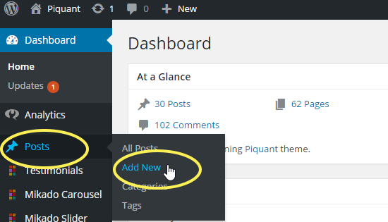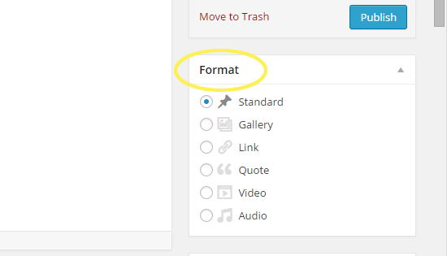
Let's take a look at the available blog post formats:
- Standard - This is the default blog format. You can start adding content with the Visual Composer page builder.
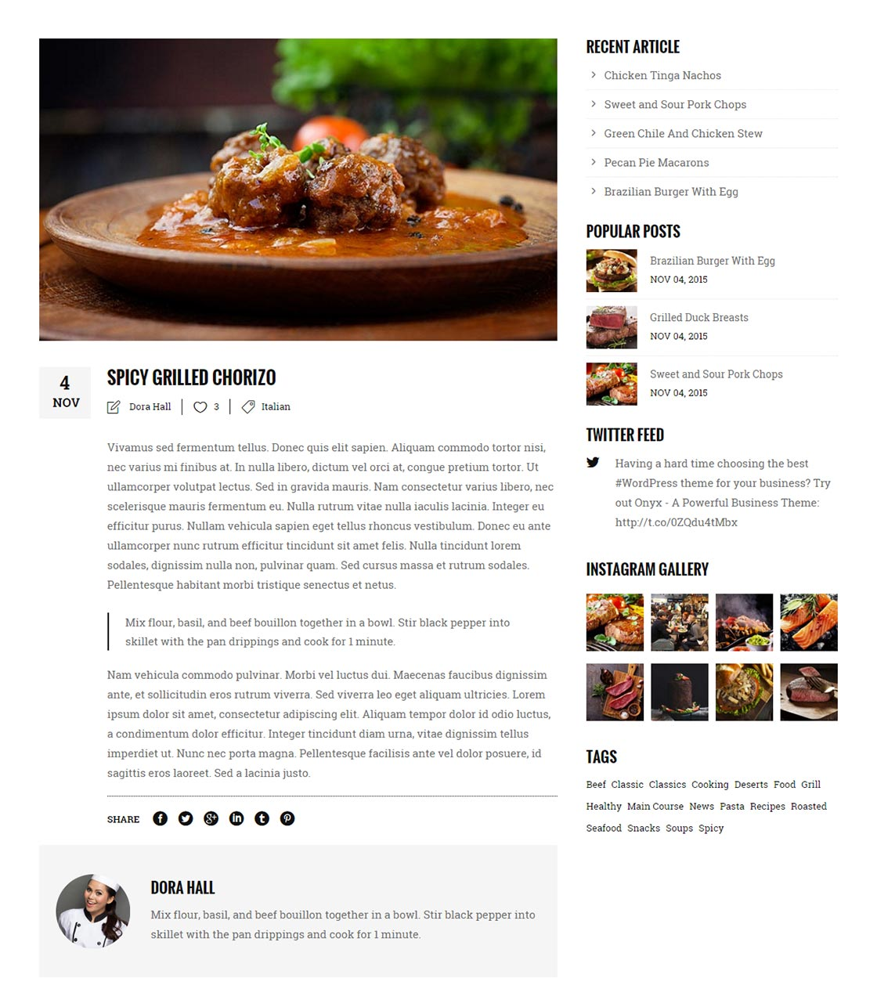
- Gallery - this format features an image gallery slider. In order for it to work, you need to add a gallery at the top of your page. A field named Mikado Gallery Post Format will appear at the bottom section of the page, and here you can upload and add your gallery images.
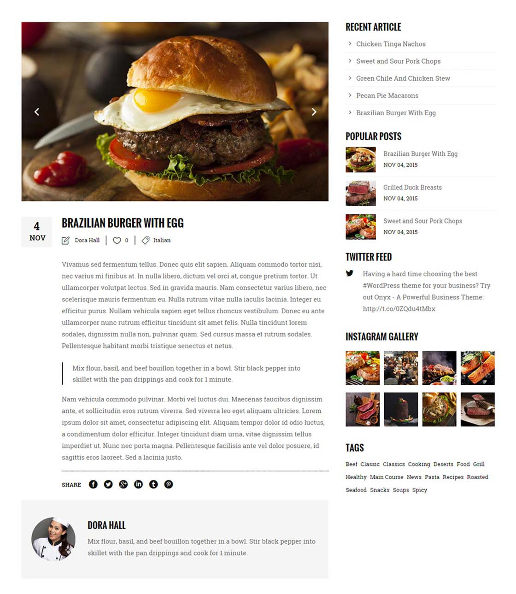
- Link - a field named Mikado Link post format will appear at the bottom section of the page. Here you can enter the full URL of the page you would like to link to.
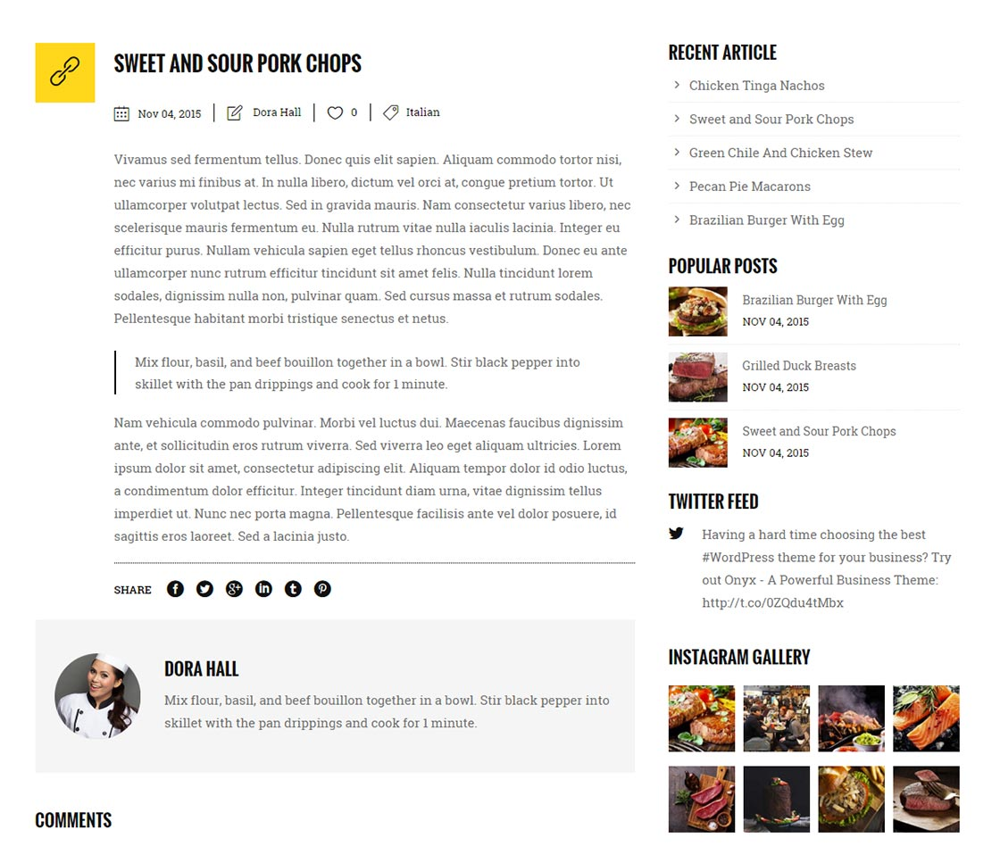
- Quote - a field named Mikado Quote post format will unfold at the bottom section of the page. Here you can enter the quote you would like to display.
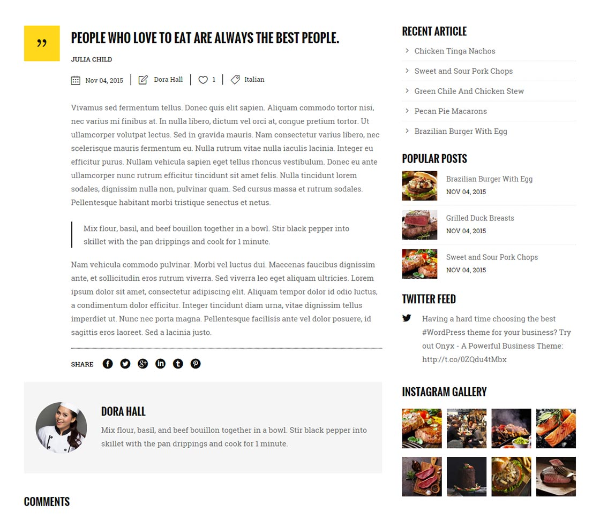
- Video - a field named Mikado Video post format will appear in the bottom section of the page. Here you can enter your video links. You can link videos from YouTube or Vimeo, or alternatively, host your own videos. If you decide to self-host your video files, you need to upload the video files via the Media section, and then enter the path to your video files in the corresponding fields. We recommend uploading videos in all three formats (WEBM, MP4, and OGV) in order to ensure compatibility with all modern browsers. In the Video Image field you can upload a background image that will be visible while the video is loading.
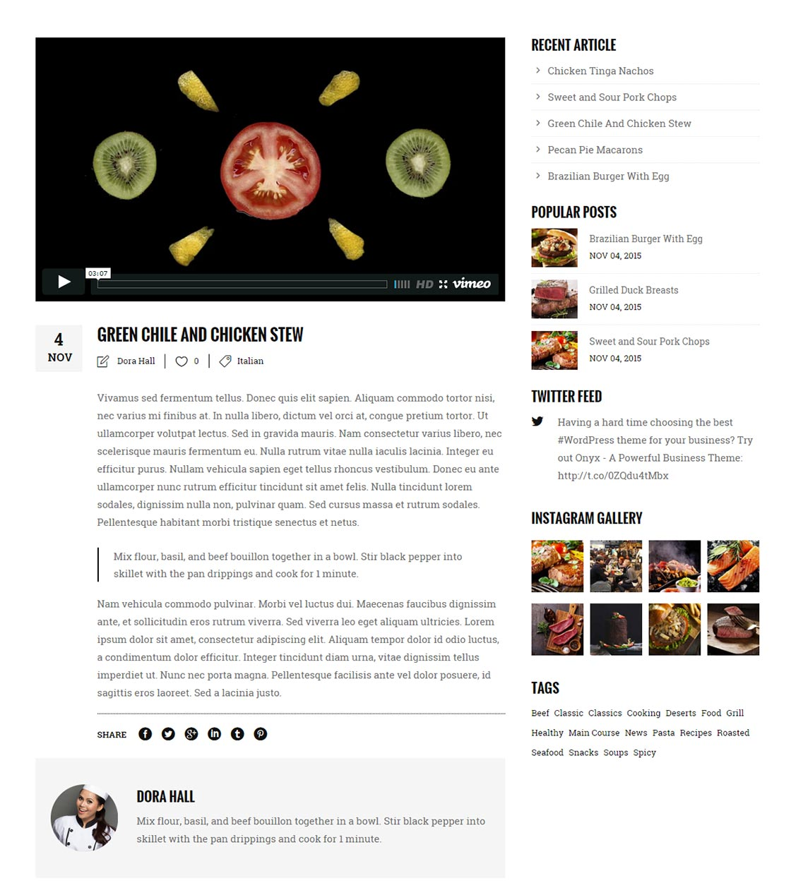
- Audio - a field named Mikado Audio post format will appear in the bottom section of the page. Here you can enter the path to an audio file you have previously uploaded to the Media Library.
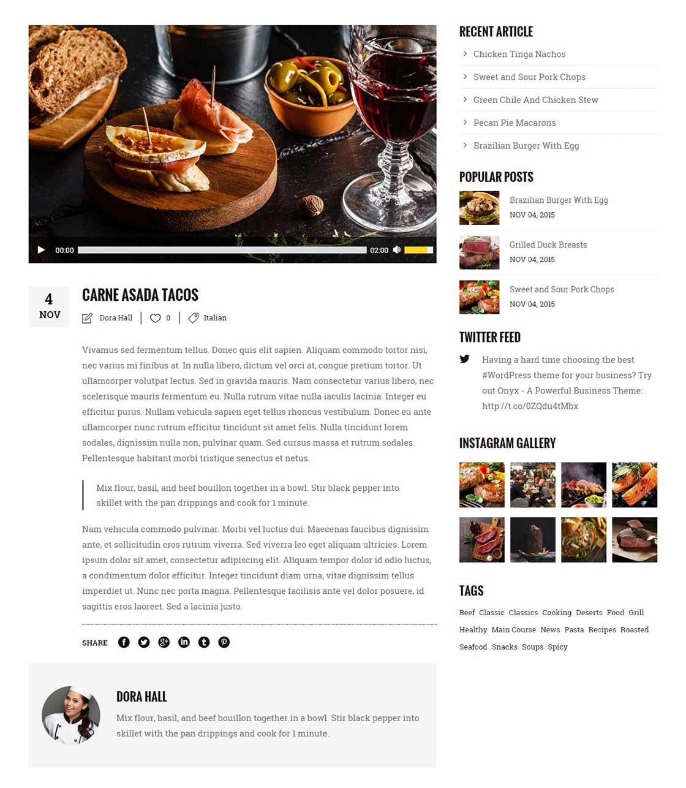
Now it's time to categorize this post:
- Beneath the Format section you will see a section named Categories. Here you can select the categories that you would like to add this post to. If you would like to create a new category, click on the + Add New Category link. A text field will appear in which you can enter a category name, and then click Add New Category.
- Once you've selected the categories you would like to add your post to, click the Publish button. Congratulations, you've just published your first blog post!
- Beneath the Categories section you will see the Tags and Featured Image sections. Here you can add tags to your post, and set a featured image which will be displayed for this post on blog list pages.
Now that we have published our first blog post, let’s go over the available custom fields for blog posts.
Mikado Content Bottom
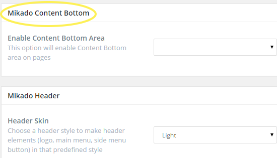
- Enable Content Bottom Area - Choose "Yes" to enable the content bottom area of your page.
- Sidebar to Display - Choose a custom widget area to display in the content bottom area of your website. You can create custom widget areas by navigating to Appearance > Widgets and there creating your custom widget areas.
- Display in Grid - Set this option to "Yes" if you would like the content bottom to be fitted in a centraly positioned gird.
- Background Color - Choose a background color for the content bottom area.
Mikado Footer
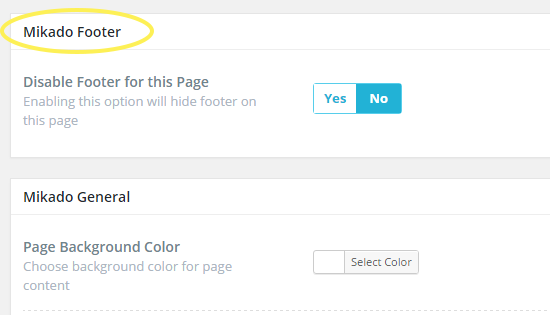
- Disable Footer for this Page - Set this option to "Yes" to disable the footer on this page.
Mikado General
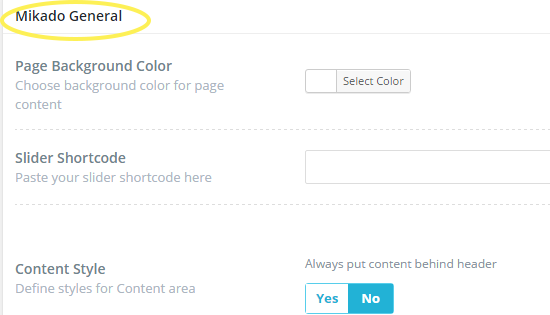
- Page Background Color - Set a background color for this page.
- Slider Shortcode - If you wish to have a slider on the top of your page, copy and paste the slider shortcode here.
- Content Style - Here you can define if you would like to set the content to always be behind the header, set a top padding for the content on this page, and also choose whether to use this same padding on mobile devices or not.
- Enable Overlapping Content - Set this option to "Yes" if you would like the content to overlap the title area and footer on this page.
- Content Background Image - Set background images for the content.
- Show Comments - Set this option to "Yes" to display comments on this page.
Mikado SEO
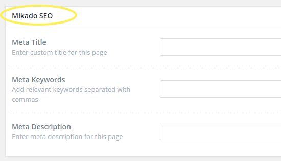
- Meta Title - Enter a relevant meta title for your page here. This is the title that will appear on search engine listings.
- Meta Keywords - Enter relevant keywords for your page here, separated by commas.
- Meta Description - Enter a short description for your page. This description will appear on search engine listings.
Mikado Sidebar
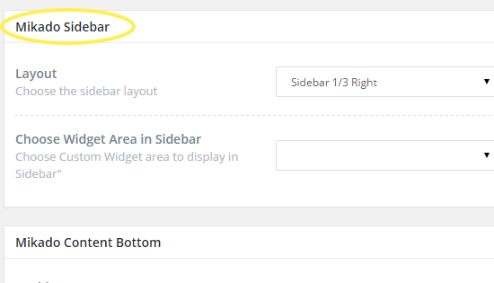
- Layout - Choose the desired layout for your sidebar. You can also disable the sidebar here by choosing "No Sidebar".
Mikado Title
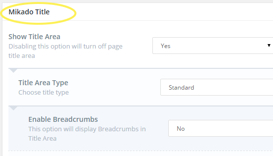
- Show Title Area - Choose whether you would like the title area to be visible on this page. By default this option is set to "Yes".
- Title Area Type - Chose a type for your title area. You can choose between "Default" and "Breadcrumb", the difference being that if you choose "Breadcrumb", instead of the page title being displayed the whole breadcrumb path will be shown in your title area. You also have the option to enable breadcrumbs when using the "Default" title area, and in this case the title area will display both the page title and breadcrumbs.
- Enable Breadcrumbs - Set this option to "Yes" to display breadcrumbs along with the page title when using the "Default" title area type.
- Animations - Choose an entry animation for the title area content.
- Vertical Alignment - Define the vertical alignment setting for the title area content on this page. You can choose to vertically align the title area content from the bottom of the header, or from the top of your browser window.
- Horizontal Alignment - Chose a horizontal alignment for the title area content on this page.
- Title Graphic - Set graphic for the title area.
- Show Title Text - Choose whether you would like to display or hide the title text.
- Title Color - Set a color for the page title text.
- Choose Title Text Size - Set a predefined size for the title text.
- Disable Title Bottom Border - Set this option to "Yes" to disable the bottom border on the title.
- Breadcrumb Color - Set a color for the breadcrumb text.
- Background Color - Set a background color for the title area.
- Hide Background Image - Set this option to "Yes" to hide the title area background image.
- Background Image - Chose a background image for the title area.
- Background Responsive Image - Set this option to "Yes" to make the title area background image responsive.
- Background Image in Parallax - Set this option to "Yes" to enable the Parallax effect on the title area background image. You also have the option to additionaly enable a "zoom out" effect on the background image.
- Height - Set a height for the page title area. This option is not available if you previously set Background Responsive Image to "Yes".
- Subtitle Type - Chose a type for the subtitle.
- Subtitle Text - Enter subtitile text to be displayed in the page title area.
- Subtitle Color - Choose a color for the subtitle text.
- Title Area Type - Chose a type for your title area. You can choose between "Default" and "Breadcrumb", the difference being that if you choose "Breadcrumb", instead of the page title being displayed the whole breadcrumb path will be shown in your title area. You also have the option to enable breadcrumbs when using the "Default" title area, and in this case the title area will display both the page title and breadcrumbs.
Mikado Header
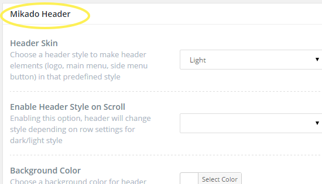
- Header Skin - Here you can choose a header style to be applied to the header on this page. The "Light" header style displays white navigation text and the "Light" logo version, while the "Dark" header style displays black navigation text and the "Dark" logo version. If you wish to use the default colors and logo, leave this field empty.
- Enable Header Style on Scroll - By enabling this option, you will enable the header to change styles ("Light" or "Dark") on scroll, depending on row settings. You can define whether the header will be "Light" or "Dark" when located over a certain row on your page by going to edit that row and setting your desired header skin in the Header Style field.
- Background Color - Set a background color for the header area.
- Transparency - Set a transparency for the header area.
- Disable Header Bottom Border - Set this option to "Yes" to disable the bottom border on the header area.
- Header Bottom Border Color - Set a color for the header bottom border.
- Top Bar Background Color - Set a background color for the top bar of the header.
- Top Bar Background Color Transparency - Set a transparency for the top bar of the header.
- Enable Top Bar Bottom Border - Set this option to "Yes" to enable the bottom border on the top bar of the header.
Blog Lists
After you have created enough posts, you need to also create a blog list on which all of these posts will be displayed. To create a blog list, you first need to create a new page on which your blog list will be displayed, and in the page's backend find the Templates dropdown on the right side of the screen. Then simply choose from one of the following options:
- Blog: Masonry
- Blog: Masonry Full Width
- Blog: Standard
- Blog: Standard Date on Side
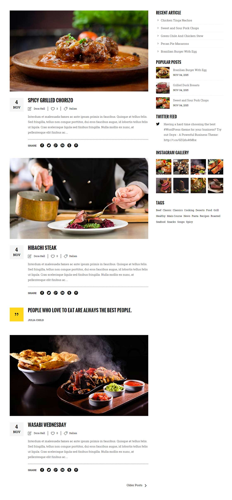
- Blog: Standard Whole Post
- Blog: Standard with Featured Post
By choosing one of the blog templates you will have set this page to automatically show a list of your blog posts. All you need to do now is publish the page.
Date Format
If you wish to change the date format on blog posts, navigate to Settings > General > Date Format from your WordPress admin, and select your format of choice.
6. Menus
In this section of the User Guide we will discuss menus and menu creation, as well as the creation of anchor links for One Page site functionality.
Menu Creation
To create a menu, navigate to Appearance > Menus from your WordPress admin panel.
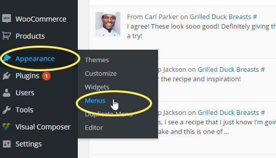
In the upper left corner of your screen you will see two tabs: Edit Menus and Manage Locations.
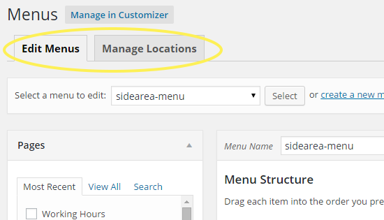
In the Manage Locations tab you can assign menus to Main Navigation.
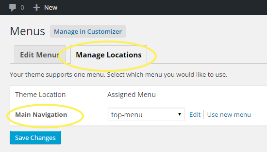
You can also assign the current menu to a location in the Edit Menus tab, by scrolling down to the Menu Settings section.

You can edit your menus in the Edit Menus tab. When editing menus, you can click on the small triangle icon on each menu item to open a list of editable settings:
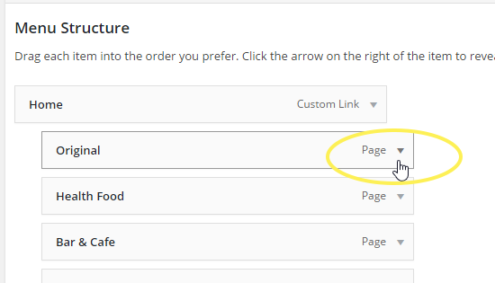
- Navigation Label – You can enter a navigation label for this menu item. This is the text that will appear on your menu. By default, the navigation label is set to the title of the page.
- Title Attribute – The title attribute will appear when a user hovers over the navigation label.
- Anchor – If you would like the menu item to lead viewers to a certain section on the page it links to, you can enter the section’s anchor ID in this field.
- Don’t Link – Enable this option if you don’t want the menu item to be a clickable link.
- Don’t Show – Enable this option if you want to hide this menu item from your menu. This is useful when creating a wide menu in which you need to set a 2nd level menu item to hold your 3rd level menu items, but you don’t want the 2nd level menu item to be displayed in the menu.
- Type – You can choose between 3 menu types. If you leave this field empty, a regular dropdown menu will be displayed. The other two available options are "Wide" menu, and "Wide with icons" menu. Note that you only need to set this option for the parent menu item, and all the child items will inherit the setting you set for their parent item.
- Wide Menu Position – Set an alignment for your wide menu. This option is useful if you don't have many columns and would like to set a certain position for them.
- Background Image for Dropdown - Set a background image for this menu item. Enter the URL to the image you would like to set as the background.
- Icon Pack - Choose the icon pack you would like to use for your menu icons. Icons are displayed in the default and "wide with icons" menu types, but not in the "wide" menu type.
- Icon – You can use this field to set an icon to appear next to this menu item.
- Featured Icon - If you would like this menu item to be highlighted as featured, you can choose a featured icon in this field.
Wide Menu
- Custom Widget Area – You can choose a custom widget area to appear beneath the menu item. This only applies to wide menus, and is recommended for 3rd level menu items.
Anchor Links (One Page Site Functionality)
You can link menu items to sections on your page using anchor links. This way, when clicked, the menu item will scroll the page down to the section you linked it to.
In order to create an anchor link, you need to follow these steps:
- You need to set anchor IDs for your rows when editing your page. You can achieve this by editing the row element in Visual Composer. In the Anchor ID field of the of the row item’s options, type in the name of your anchor. You can use any text without empty spaces.
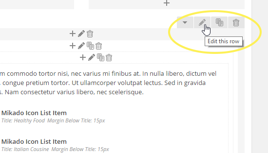
- You can repeat step 1 for as many rows on as many pages as needed.
- When you go to edit your menu in Appearance > Menus, find the page (or pages) containing your rows with anchors and drag as many instances of them into your menu as needed.,p>
- Edit each of the newly added menu items, and for each one type in its corresponding anchor ID in the Anchor field.
7. Mikado Options
This section of the User Guide provides a comprehenisve overview of all the settings available in the Mikado Options section of your WordPress admin panel. The settings found here are applied globally and will affect all pages on your website. However, note that many of these options can be overridden locally by applying settings on individual pages or on shortcode elements.
General
Branding
- Hide Logo - Set this option to "Yes" to hide the logo from your website.
- Logo Image - Default - Upload a default logo for your website.
- Logo Image - Dark - Upload a logo to be displayed on the "Dark" header skin.
- Logo Image - Light - Upload a logo to be displayed on the "Light" header skin.
- Logo Image - Sticky - Upload a logo to be displayed on the sticky header.
- Logo Image - Mobile - Upload a logo to be displayed on the mobile header.
Appearance
- Font Family - Set the default font family for your website.
- Additional Google Fonts - Set this option to "Yes" if you would like to add aditional Google Fonts to your website. These fonts are not set on any specific elements, just added to the site stylesheet, so they can be added to elements via custom css, or used in the Custom Font element.
- First Main Color - Set a first main color for your website.
- Page Background Color - Set a background color for your pages.
- Text Selection Color - Set a color for text selection.
- Boxed Layout - Set this option to "Yes" to enable the boxed layout. If you choose a boxed layout for your site, the content will be fitted in a centrally positioned grid.
- Page Background Color - Set a background color for outside the boxed content.
- Background Image - Set a background image for the content outside the box.
- Background Pattern - Set a background pattern for the content outside the box.
- Background Image Attachment - Choose whether the background image will be fixed or can be scrolled.
- Initial Width of Content - Choose the initial width of your content in grid. This option only takes effect on pages set to the "Default Template" and rows set to "In Grid".
- Preload Pattern Image - Set a preload pattern image to be displayed until images are loaded.
- Element Appearance - For animated elements, set the distance (related to browser bottom) at which the animation will start.
Behavior
- Smooth Scroll - Set this option to "Yes" to enable a smooth scrolling effect on your pages.
- Element Animation on Mobile/Touch Devices - Set this option to "Yes" to enable entry animations for elements when viewed on mobile/touch devices.
- Show "Back to Top" Button - Set this option to "Yes" to display a "Back to Top" button on your website.
- Responsiveness - Set this option to "Yes" to enable responsiveness on your website.
Custom Code
- Custom CSS - You can input any custom CSS into this field and it will take effect on your site.
- Custom JS - You can input any custom Javascript into this field and it will take effect on your site. The entered code will be executed on domready. If using jQuery, please note that the jQuery selector is "$j" because of the conflict mode.
SEO
- Disable SEO - Set this option to "Yes" to disable SEO
- Meta Keywords - Input relevant keywords seperated by commas to improve your websites SEO
- Meta Description - Enter a short description of your website for SEO.
Fonts
Headings
Here you can set up all styles for heading tags (H1-H6)
Text
- Paragraph - Set styles for paragraph text.
- Links - Set styles for link text.
Header
Header
- Choose Header Type - Choose the type of header you would like to use. Below we will describe the options for each header type separately.
- Choose Header Behaviour - Choose a header behaviour type.
- Top Bar - Set this option to "Yes" to enable the top bar on the header.
- Choose Top Bar Layout - Set a layout for the top bar.
- Choose Columns Width - Set the width of the top bar columns..
- Top Bar in Grid - Set this option to "Yes" if you would like the top bar content to be displayed in grid.
- Grid Background Color - Set a background color for the top bar contents that are in grid.
- Grid Background Transparency - Set a background transparency for the top bar contents that are in grid.
- Background Color - Set a background color for the top bar.
- Background Transparency - Set a background transparency for the top bar.
- Top Bar Height - Set a height for the top bar.
- Choose Top Bar Layout - Set a layout for the top bar.
- Header Skin - Choose a predefined header skin in order to display all header elements in the style of that skin.
- Enable Header Style on Scroll - Set this option to "Yes" to enable the header to change style on scroll, depending on the row it is located over and the header skin set in the row options.
Header Standard Options
Menu Area
- Header in Grid - Set this option to "Yes" to set the menu area in grid.
- Grid Background Color - Set a background color for the menu area in grid.
- Grid Background Transparency - Set a background transparency for the menu area in grid.
- Background Color - Set a background color for the menu area.
- Background Transparency - Set a background transparency for the menu area.
- Height - Set a height for the menu area.
Sticky Header
- Scroll Amount for Sticky - Enter a scroll amount (how much you will scroll from the top of the page) for the sticky header to appear at.
- Sticky Header in Grid - Set this option to "Yes" to set the sticky header in grid.
- Grid Background Color - Set a background color for the sticky header when set to in grid.
- Grid Background Transparency - Set a background transparency for the sticky header when set to in grid.
- Background Color - Set a background color for the sticky header.
- Sticky Header Transparency - Set a backgorund transparency for the sticky header.
- Sticky Header Height - Set a height for the sticky header.
- Sticky Header Menu - Set styles for the sticky header menu.
Fixed Header
- Grid Background Color - Set a grid background color for the fixed header.
- Header Transparency Grid - Set a grid background transparency for the fixed header.
- Background Color - Set a background Color for the fixed header.
- Header Transparency - Set a background transparency for the fixed header.
Main Menu
Main Menu General Settings
- Icon Position in 1st Level Menu - Choose the position of the icons in the 1st level of the main menu.
- Icon Size - Set a size for the icons if you set the icon position to "Top".
- Item Height in 1st Level Menu - Set a height for 1st level menu items in the main menu.
- Enable 1st Level Menu Item Borders - Set this option to "Yes" to enable borders around first level menu items.
- Border Width - Set a width for the borders.
- Border Radius - Set a border radius.
- Border Style - Choose a style for the borders.
- Border Color - Set colors for the borders.
- Enable 1st Level Menu Item Separators - Set this option to "Yes" to enable separators between first level menu items.
- Separator Color - Set a color for the separators.
- Enable 1st Level Menu Item Text Decoration - Set this option to "Yes" to enable a text decoration style on 1st level menu items on hover and when active.
- Menu Item Text Decoration - Choose text decoration styles for 1st level menu items.
- Main Dropdown Menu - Set styles for the dropdowns in the main menu.
- Main Dropdown Menu Padding - Set paddings for the dropdowns in the main menu.
- Main Dropdown Menu Appearance - Choose how the dropdown menu will appear.
- Dropdown Position - Set a position for the dropdown. Enter the value in percentages where 100% is the full height of the header.
- Enable Arrow Icon for Dropdown Menu - Set this option to "Yes" to enable an arrow icon to appear on 1st level menu items with a dropdown menu.
- Enable Dropdown Top Separator - Set this option to "Yes" to enable a top separator on second level menu items.
- Dropdown Top Separator Color? - Choose a color for the top separator.
- Enable Dropdown Menu Border - Set this option to "Yes" to display a border around the dropdown menu.
- Dropdown Border Color - Set a color for the border around the dropdown.
- 1st Level Menu - Set styles for 1st level menu items in the main menu.
- 2nd Level Menu - Set styles for 2nd level menu items in the main menu.
- 2nd Level Wide Menu - Set styles for the 2nd level menu items in the wide menu.
- 3rd Level Menu - Set styles for 3rd level menu items in the main menu.
- 3rd Level Wide Menu - Set styles for 3rd level menu items in the wide menu.
Mobile Header
- Mobile Header Height - Set a height for the mobile header.
- Mobile Header Background Color - Set a backgorund color for the mobile header.
- Mobile Menu Background Color - Set a background color for the mobile menu.
- Mobile Menu Item Separator Color - Set a color for the separator between menu items in the mobile menu.
- Logo Height for Mobile Header - Set a height for the logo in the mobile header (on screens smaller than 1000px).
- Logo Height for Mobile Devices - Set a height for the logo on mobile devices (on screens smaller than 480px)
Typography
- Navigation Text Color - Set a color for the navigation text in the mobile header.
- Navigation Hover/Active Color - Set a color for the navigation in the mobile header when hovered over or active.
- Navigation Font Family - Set a font family for the navigation text in the mobile header.
- Navigation Font Size - Set a font size for the navigation text in the mobile header.
- Navigation Line Height - Set a line height for the navigation text in the mobile header.
- Navigation Text Transform - Set a text transform style for the navigation text in the mobile header.
- Navigation Font Style - Set a font style for the navigation text in the mobile header.
- Navigation Font Weight - Set a font weight for the navigation text in the mobile header.
Mobile Menu Opener
- Mobile Navigation Icon Pack - Choose an icon pack to use in the mobile header navigation.
- Mobile Navigation Icon Color - Set a color for the mobile menu opening icon (three-bar/hamburger icon).
- Mobile Navigation Icon Hover Color - Set a hover color for the mobile menu opening icon (three-bar/hamburger icon).
- Mobile Navigation Icon Size - Set a size for the mobile menu opening icon (three-bar/hamburger icon).
Side Area
- Side Area Type - Choose a type for the side area.
- Side Area Width - Set a width for the side area.
- Content Overlay Background Color - Choose a background color for the overlay that will appear over the content when the side area is opened.
- Content Overlay Background Transparency - Choose a background transparency for the overlay that will appear over the content when the side area is opened.
- Side Area Background Image - Set a background image for the side area.
- Side Area Button Icon Pack - Choose an icon pack for the side area button.
- Side Area Icon - Choose an icon for the side area.
- Side Area Icon Size - Set a size for the side area icon.
- Predefined Side Area Icon Size - Choose a predefined icon size for the side area icon.
- Side Area Icon Style - Define styles for the side area icon.
- Side Area Icon Spacing - Set paddings and margins for the side area icon.
- Icon Border - Set this option to "Yes" to enable a border around the icon.
- Border Style - Define styles for the icon border.
- Text Alignment - Choose a text alignment for the side area.
- Side Area Title - Enter a title for the side area.
- Background Color - Set a background color for the side area.
- Padding - Define padding for the side area.
- Close Icon Style - Choose a style for the close ("X") icon.
- Close Icon Size - Set a size for the close ("X") icon.
- Title - Set styles for the side area title.
- Text - Set styles for the side area text.
- Link Style - Set styles for the links in the side area.
- Border Bottom on Elements - Set this option to "Yes" to enable a bottom border on elements in the side area.
- Border Bottom Color - Set a color for the bottom border.
Search

- Search Type - Choose a search type.
- Search Icon Pack - Choose an icon pack for the search icon.
- Fullscreen Search Overlay Animation - Choose an overlay animation for the search.
- Search Area in Grid - Set this option to "Yes" to display the search area in grid.
Initial Search Icon in Header
- Icon Size - Set a size for the search icon in the header.
- Icon Colors - Set colors for the search icon.
- Icon Background Style - Set a backgorund style for the search icon.
- Enable Search Icon Text - Set this option to "Yes" to display the text "Search" next to the search icon in the header.
- Search Icon Text - Set styles for the search icon text.
- Icon Spacing - Define margins and paddings for the search icon.
Search Bar
- Background Color - Set a background color for the search bar.
- Search Input Text - Define styles for the text in the search input.
- Search Label Text - Define styles for the "Search" label.
- Search Icon - Define styles for the search icon.
- Search Close - Define styles for the close icon ("X") for the search bar.
- Search Bottom Border - Define styles for the search text input bottom border.
Title
Title Settings
- Show Title Area - Use this option to control whether you would like to display the title area or not on your website.
- Title Area Type - Chose a type for your title area. You can choose between "Default" and "Breadcrumb", the difference being that if you choose "Breadcrumb", instead of the page title being displayed the whole breadcrumb path will be shown in your title area. You also have the option to enable breadcrumbs when using the "Default" title area, and in this case the title area will display both the page title and breadcrumbs.
- Enable Breadcrumbs - Set this option to "Yes" to display breadcrumbs along with the page title when using the "Default" title area type.
- Animations - Choose an entry animation for the title area content.
- Vertical Alignment - Define the vertical alignment setting for the title area content on this page. You can choose to vertically align the title area content from the bottom of the header, or from the top of your browser window.
- Horizontal Alignment - Chose a horizontal alignment for the title area content on this page.
- Background Color - Set a background color for the title area
- Background Image - Chose a background image for the title area.
- Background Responsive Image - Set this option to "Yes" to make the title area background image responsive.
- Background Image in Parallax - Set this option to "Yes" to enable the Parallax effect on the title area background image. You also have the option to additionaly enable a "zoom out" effect on the background image.
- Height - Set a height for the page title area. This option is not available if you previously set Background Responsive Image to "Yes"
- Title Area Type - Chose a type for your title area. You can choose between "Default" and "Breadcrumb", the difference being that if you choose "Breadcrumb", instead of the page title being displayed the whole breadcrumb path will be shown in your title area. You also have the option to enable breadcrumbs when using the "Default" title area, and in this case the title area will display both the page title and breadcrumbs.
Typography
- Title - Set styles for the title text.
- Subtitle - Set styles for the subtitle text in the title area.
- Breadcrumbs - Set styles for the breadcrumb text in the title area.
Page
Design Style
- Sidebar Layout - Choose a layout for the sidebar on pages.
- Show Comments - Set this option to "Yes" to display comments on pages.
Sidebar
- Sidebar Background Color - Set a background color for the sidebar.
- Padding - Set padding for the sidebar.
- Text Alignment - Set a text alignment for the sidebar.
Content
General
- Content Top Padding for Templates in Full Width - Set a top padding for the content on pages that are in full width. Please note that if you set this option it is also important to set Content Top Padding for Tablet and Mobile Devices.
- Content Top Padding for Templates in Grid - Set a top padding for the content on pages that are in grid. Please note that if you set this option it is also important to set Content Top Padding for Tablet and Mobile Devices.
- Content Top Padding for Tablet and Mobile Devices - Enter a top padding for the content on devices smaller than 1024px.
Content Bottom
- Enable Content Bottom Area - Set this option to "Yes" to enable the content bottom area.
- Widget Area to Display - Choose a custom widget area to display in the content bottom area of your website. You can create custom widget areas by navigating to Appearance > Widgets and there creating your custom widget areas.
- Display in Grid - Set this option to "Yes" if you would like the content bottom to be fitted in a centraly positioned gird.
- Background Color - Choose a background color for the content bottom area.
Footer
- Uncovering Footer - Set this option to “Yes” if you would like your footer to gradually appear as you scroll towards the end of the page.
- Footer in Grid - Set this option to "Yes" if you would like the footer content to be displayed in grid.
- Show Footer Top - Set this option to "Yes" to display the footer top.
- Footer Top Columns - Choose a number of columns to display in the footer top.
- Footer Top Columns Alignment - Choose the text alignment for the footer top column content.
- Show Footer Bottom - Set this option to "Yes" to display the footer bottom.
- Footer Bottom Columns - Choose the number of columns to display in the footer bottom.
Restaurant
OpenTable
- OpenTable ID - Input your OpenTable ID here if you would like to use the OpenTable service for making reservations.
Working Hours
Here you can input working hours for each day in the week.
Menu Item Single Page
- Enable Navigation Through Posts - Set this option to "Yes" if you would like to enable navigation through single menu items. This will enable previous and next post links.
- Show Author Info Section - Set this option to "Yes" to display a section with information about the post author.
- Enable Comments - Set this option to "Yes" if you would like to enable comments on single menu item posts.
- Show Preparation Info Section - Set this option to "Yes" if you would like to enable a section in the sidebar with information on how to prepare the menu item.
- Show Related Menu Items - Set this option to "Yes" if you would like to display related menu items in the sidebar.
- Related Menu Item Image Proportion - Choose a proportion for the related menu item images.
Elements
Accordions
Typography
- Typography - Set styles for accordion typography.
Basic Accordions Color Styles
- Accordion Color Styles - Set color styles for the accordion.
- Active and Hover Accordion Color Styles - Set hover and active color styles for the accordion.
Boxed Accordion Title Color Styles
- Boxed Accordion Title Color Styles - Set color styles for the Boxed accordions.
- Active and Hover Title Color Styles - Set active and hover color styles for the Boxed accordions.
Button
Typography
- Typography - Set typography styles for the button.
Types
- Outline Type - Set styles for the "Outline" type of button.
- Solid Type - Set styles for the "Solid" type of button.
Tabs
Tabs Navigation Typography
- Tabs Navigation Typography - Set typography styles for the tabs navigation.
Tab Navigation Color Styles
- Tab Navigation Color Styles - Set color styles for the tabs navigation.
- Active and Hover Navigation Color Styles - Set color styles for tab navigation when active and hovered on.
Blog
Blog Lists
- Blog Layout for Archive Pages - Choose a blog layout for blog archive pages.
- Archive and Category Sidebar - Choose a sidebar layout for archive and category pages.
- Pagination - Set this option to "Yes" to enable pagination on blog pages.
- Pagination Range Limit - Enter the number of numerals you want displayed in the pagination. For example, enter "3" to get "1 2 3 ..."
- Pagination on Masonry - Choose a pagination style for Masonry blog lists.
- Masonry Filter - Set this option to "Yes" to display a category filter on Blog: Masonry and Blog: Masonry Full Width page templates.
- Number of Words in Excerpt - Set a number of words to be displayed in the excerpt.
- Standard Type Number of Words in Excerpt - Set a number of words to be displayed in the excerpt on the standard type of blog lists.
- Masonry Type Number of Words in Excerpt - Set a number of words to be displayed in the excerpt on the Masonry type of blog lists.
- Show Likes - Set this option to "Yes" if you would like to show likes on all blog lists.
Blog Single
- Sidebar Layout - Choose a sidebar layout for blog single posts.
- Show Comments - Set this option to "Yes" to display comments on blog single pages.
- Enable Prev/Next Single Post Navigation Links - Enable navigation links on single posts, so you can navigate through single blog posts.
- Enable Navigation Only in Current Category - Set this option to "Yes" to limit the navigation only to the current category.
- Enable Tags on Single Post - Set this option to "Yes" to enable tags on single blog posts.
- Show Author Info Box - Set this option to "Yes" to display the author info box on blog single posts.
- Show Author Email - Set this option to "Yes" to show the author e-mail in the author info box.
Social
- Enable Social Share - Set this option to "Yes" to enable the social share functionality.
Show Social Share On
Here you can choose on what types of pages you would like to enable the social share functionality.
Social Networks
Here you can set which social networks you would like sharing to be available on. If you would like to, you can also set a custom icon for each social network.
- Connect With Twitter - Use this button to connect the twitter widget with your twitter feed. See more in the Widgets section of this User Guide.
- Connect with Instagram - Use this button to connect the instagram widget with your instagram account. Read more about this in the Widgets section of this User Guide.
404 Error Page
- Title - Enter a title to be displayed on the 404 error page.
- Text - Enter some text to be displayed on the 404 error page.
- Back to Home Label - Enter text for the "back to home" label. This is the text that will suggest users to return to the home page from the 404 error page.
Parallax
- Parallax on Touch Devices - Set this option to "Yes" to enable parallax on touch devices.
- Parallax Min Height - Set a minimum height for parallax sections on small devices (phones, tablets, etc.).
Contact Form 7
You can set multiple custom styles for contact forms, and then choose what style you would like to apply to each form you add to a page.
- Form Text Typography - Set styles for the contact form text.
- Form Label Typography - Set styles for the contact form labels.
- Form Elements Background and Border - Set the background and border styles for contact form elements.
- Elements Padding - Set up padding for contact form elements.
- Elements Margin - Set up margins for contact form elements.
- Textarea Height - Set a height for the textarea contact form elements.
- Button Typography - Set styles for text in the contact form buttons.
- Button Background and Border - Set the background and border styles for contact form buttons.
- Button Height - Set a height for the contact form button.
- Button Left/Right Padding - Set a left and right padding for the contact form button.
- Make Button Full Width - Set this option to "Yes" to make the contact form button full width.
WooCommerce
Product List
- Enable Full Width Template - Set this option to "Yes" to enable a full width template for your Shop page.
- Product List Columns - Choose a number of columns for the product list.
- Number of Products Per Page - Set the number of products you would like to display per page.
- Products Title Tag - Set a heading tag for your product titles on product list pages.
Single Product
- Single Product Title Tag - Set a heading tag for your single product titles.
- Hide Product Info - Set this option to "Yes" if you would like to hide the product info (product category, product tag, product SKU, etc.).
Reset
You can use this option to reset all the Mikado Options to their default settings.
Import
You can use this options panel to import demo content. For more information about importing demo content please refer to the Getting Started section of this User Guide.
8. Custom Shortcodes
In this section of the User Guide we will take a comprehesive look at all the custom shortcodes included in the theme and their repsective options.
Row
The row element is a container element in which you can add other elements (shortcodes) and sort them on your page.
General
- Row ID - Enter an optional ID for your row. Make sure the ID you set is unique and valid according to W3C specifications.
- Extra Class Name - If you wish to style a particular content element differently, you can use this field to add an extra class name to that element and then refer to that class name in your css file.
- Row Type - Choose between a standard "Row" and a "Parallax" row.
- Content Width - Set a width for your row content. You can choose between "Full Width" and "In Grid".
- Header Style - Choose between "Light" and "Dark" header style. This option takes effect if you have set the Enable Header Style on Scroll option to "Yes" in either the page options or the global header options. The Header Style option defines whether the header will display the "Light" or "Dark" skin when scrolled over this row.
- Anchor ID - Enter an anchor ID for this row. Anchor IDs are used to create anchor links for one page site functionality. You can find out more about creating anchor links in the Menus section of this User Guide.
- Content Alignment - Set an alignment for the content in this row.
- Full Screen Height - This option is only available if you chose "Parallax" in the Row Type field. Set this option to "Yes" if you would like your parallax row to take up the full height of the screen.
- Vertically Align Content to Middle - Set this option to "Yes" if you would like to vertically align the content of your parallax section to the middle of the screen.
- Section Height - This option is only available if you chose "Parallax" in the Row Type field. Here you can define the height of your parallax section.
- Parallax Background Image - This option is only available if you chose "Parallax" in the Row Type field. Set your parallax background image in this field.
- Parallax Speed - This option is only available if you chose "Parallax" in the Row Type field. You can define the speed of the parallax effect in this field.
- Video Background - Set this option to "Yes" to enable a video background on this row.
- Video Overlay - Set this option to "Yes" to enable a video overlay (pattern image) on the video.
- Video Overlay Image (pattern) - Set the overlay image you would like to use.
- Video Background (webm) File URL - Input the URL to the WEBM version of your video.
- Video Background (mp4) file URL - Input the URL to the MP4 version of your video.
- Video Background (ogv) file URL - Input the URL to the OGV version of your video.
- Video Preview Image - Set an image to be displayed while the video loads.
- Video Overlay - Set this option to "Yes" to enable a video overlay (pattern image) on the video.
- CSS Animation - Choose a CSS entry animation for the row content.
- Transition Delay - Set a delay (in milliseconds) for the CSS animation.
- Enable Row Overlap - Set this option to "Yes" if you would like to enable overlapping between this row and the row above it. This option is only available for inner rows (rows within a row).
- Overlap Size - Set a predefined overlap size. This will determine how much the row will overlap the row above it.
- Use Row as Box - Set this option to "Yes" if you would like to use this row as a box. This option is only available for inner rows (rows within a row).
Design Options
In the Design Options tab you can set margins, borders, paddings, as well as border colors, border styles, border radius, background color, and a background image to your row.
Mikado Reservation Form
You can use this shortcode to create a contact form for making reservations through the OpenTable reservation service. All you need to do to create this form is enter your OpenTable ID. If you have already entered your OpenTable ID in Mikado Options > Restaurant > OpenTable, you don't need to enter it here again.
Mikado Working Hours
You can use this shortcode to display your working hours. You can set your working hours in Mikado Options > Restaurant > Working Hours and they will automatically be displayed when this shortcode is added to the page.
- Title - Enter a title to be displayed above the working hours.
- Title Accent Word - If you would like the last word in the title to be accented, enter it here.
- Enable Frame - Set this option to "Yes" to enable a frame around the working hours section.
- Background Image - Optionally set a background image for the working hours section.
Mikado Menu List

You can use this shortcode to display a list of your restaurant menu items. To learn how to create Menu Items, please see the Restaurant Menu section of this User Guide.
General
- Title - Enter a title for the Menu List.
- Title Position - Set a position for the Menu List title.
- Show Featured Images - Set this option to "Yes" to display featured images for the items in the Menu List.
Query
- Order By - Choose how to order the menu items.
- Order - Choose whether you would like to order the items in ascending or descending order.
- Menu Section - If you would like to show menu items from just one section of the menu, input the menu section slug here. Leave this field empty to display all menu items from all menu sections.
- Number of Menu Items - Define how many menu items you would like to display. Enter "-1" to display all menu items.
Mikado Menu Grid
You can use this shortcode to display a gallery of your restaurant menu items. To learn how to create Menu Items, please see the Restaurant Menu section of this User Guide.
General
- Number of Columns - Set a number of columns for the menu grid.
- Image Proportions - Set a predefined proportion for your menu item images.
Query
- Order By - Choose how to order the menu items.
- Order - Choose whether you would like to order the items in ascending or descending order.
- Menu Section - If you would like to show menu items from just one section of the menu, input the menu section slug here. Leave this field empty to display all menu items from all menu sections.
- Number of Menu Items - Define how many menu items you would like to display. Enter "-1" to display all menu items.
Mikado Menu Carousel
You can use this shortcode to display your restaurant menu items in a carousel. To learn how to create Menu Items, please see the Restaurant Menu section of this User Guide.
General
- Image Proportions - Set a predefined proportion for your menu item images.
- Navigation Style - Choose between "dark" and "light" style for the carousel navigation.
Query
- Order By - Choose how to order the menu items.
- Order - Choose whether you would like to order the items in ascending or descending order.
- Menu Section - If you would like to show menu items from just one section of the menu, input the menu section slug here. Leave this field empty to display all menu items from all menu sections.
- Number of Menu Items - Define how many menu items you would like to display. Enter "-1" to display all menu items.
Elements Holder
The Elements Holder shortcode allows you to display any combination of elements in an organized column structure.
General
- Background Color - Set a background color for the elements holder.
- Columns - Choose a number of columns for the elements holder.
- Items Float Left - Check the "Make Items Float Left?" checkbox to float the element holder items to the left.
Width and Responsiveness
- Switch to One Column - Choose at which stage (screen size) you would like the element holder items to switch to one column.
- Choose Alignment in Responsive Mode - Choose an alignment for the content in responsive mode.
After you have set up your elements holder, you can add Elements Holder Items to it, and edit the following fields:
General
- Background Color - Set a background color for the elements holder item.
- Background Image - Set a background image for the elements holder item.
- Padding - Set a padding for the elements holder item.
- Horizontal Alignment - Choose a horizontal alignment.
- Vertical Alignment - Choose a vertical alignment.
- Animation Name - Choose an animation for the elements holder item.
- Animation Delay - Set a delay time (in milliseconds) for the animation.
Width and Responsiveness
In this tab you can define paddings for the Elemnts Holder Item ona various stages (screen sizes).
Mikado Team
This shortcode alows you to easily present your team members.
- Type - Choose how you would like your team element to display.
- Image - Set a team member image.
- Name - Enter the name of your team member.
- Name Tag - Choose a heading tag for the team member's name.
- Position - Enter a job position for your team member.
- Description - Enter a description for your team member.
- Social Icon Pack - Choose a social icon pack.
- Social Icon Type - Choose a type for the social icons.
- Social Icon - Set a social icon.
- Social Icon Link - Input a link that the social icon will lead to.
Icon
Icons are great for communicating all sorts of information.
- Icon Pack - Choose an icon pack.
- Icon - Choose an icon.
- Size - Choose a predefined size for your icon.
- Custom Size - Enter a custom size for your icon.
- Type - Choose an icon type.
- Border Radius - Set a border radius for the "Square" icon type.
- Shape Size - Set a size for the icon shape when using the "Circle" or "Square" icon types.
- Icon Color - Set a color for the icon.
- Border Color - Enter a color for the border when using the "Circle" or "Square" icon types.
- Border Width - Set a width for the border when using the "Circle" or "Square" icon types.
- Background Color - Set a background color when using the "Circle" or "Square" icon types.
- Hover Icon Color - Set a hover color for the icon.
- Hover Border Color - Set a hover color for the border when using the "Circle" or "Square" icon types.
- Hover Background Color - Set a hover color for the background when using the "Circle" or "Square" icon types.
- Margin - Enter a margin for the icon in a top, right, bottom, left format (ex.: "10px 20px 10px 20px").
- Icon Animation - Set this option to "Yes" if you would like to animate the icon.
- Icon Animation Delay - Set a delay time for the icon animation (in milliseconds).
- Link - Input a URL that you would like the icon to lead to when clicked.
- Use Link as Anchor - Check the "Use this icon as Anchor" checkbox if you would like to use the icon as an anchor link.
- Target - Choose a target for the icon link.
Mikado Call to Action
Call to Action elements allow you to display bold messages on your page, inviting viewers to follow a link or take some manner of action.
General
- Full Width - Set this option to "Yes" to set the call to action to span across the full width of the screen.
- Content in Grid - Set this option to "Yes" if you would like the call to action content to be in grid.
- Grid Size - Set the size of the grid.
- Content in Grid - Set this option to "Yes" if you would like the call to action content to be in grid.
- Type - Choose a type for your call to action.
- Icon Pack - Choose an icon pack if you set the Type field to "With Icon".
- Icon - Choose an icon.
- Background Color - Set a background color for the call to action.
- Border Color - Set a border color for the call to action.
- Show Button - Set this option to "Yes" to show a button on your call to action.
- Button Type - Choose a button type.
- Button Position - Chose a position for the button.
- Button Text - Enter the text you would like displayed on the button.
- Button Link - Input a URL you would like the button to lead to when clicked.
- Button Target - Set a target for the button link.
- Button Icon Pack - Choose an icon pack for the button.
- Button Icon - Choose an icon for the button.
- Content - Enter the text you would like displayed on your call to action.
Design Options
- Icon Size - Set a size for your icon.
- Box Padding - Enter a padding for your call to action box.
- Default Text Font Size - Enter a text size for your call to action text.
- Button Size - Choose a predefined size for your button.
Mikado List - Ordered
You can use this shortcode to create ordered lists.
Mikado List - Unordered
You can use this shortcode to create unordered lists.
- Style - Choose a style for your unordered list.
- Animate List - Set this option to "Yes" to animate the list.
- Font Weight - Choose a font weight for the list text.
- Padding left - Enter a left padding for the unordered list.
- Content - Enter your unordered list content.
Mikado Message
Messages allow you to display hints, warnings, or any other messages that you wish to communicate to your users.
- Type - Choose a type for your message.
- Icon Pack - Choose an icon pack for your message.
- Icon - Choose an icon for your message.
- Icon Color - Set a color for the icon. This option only applies if you chose "With Icon" in the Type field.
- Icon Background Color - Set a background color for the icon. This option only applies if you chose "With Icon" in the Type field.
- Background Color - Set a background color for your message.
- Border Color - Set a border color for your message.
- Border Width - Set a border width for your message.
- Close Icon Color - Set a color for the "Close" ("X") icon.
- Content - Enter the content of your message.
Mikado Counter
Counters are great for communicating information in the form of numbers.
General
- Type - Choose a type for the counter.
- Position - Chose a position for the counter content.
- Digit - Enter a digit to count to.
- Digit Style - Choose a style for the digit. You can choose between "Dark" and "Light".
- Title - Enter a title for the counter.
- Text - Enter some text for the counter.
Design Options
- Digit Font Size - Enter a font size for the digits.
- Padding Bottom - Enter a bottom padding for the counter.
Mikado Countdown
The countdown element provides a great way to display a countdown timer on your page.
General
- Year - Set a year to countdown to.
- Month - Set a month to countdown to.
- Day - Set a day to countdown to.
- Hour - Set an hour to countdown to.
- Minute - Set a minute to countdown to.
- Month Label - If you would like to change the "Month" label, input your desired text here.
- Day Label - If you would like to change the "Day" label, input your desired text here.
- Hour Label - If you would like to change the "Hour" label, input your desired text here.
- Minute Label - If you would like to change the "Minute" label, input your desired text here.
- Second Label - If you would like to change the "Second" label, input your desired text here.
Design Options
- Digit Font Size - Set a font size for the digits.
- Label Font Size - Set a font size for the labels.
Mikado Progress Bar

The Progress Bar element is great for communicating a large amount of information in a visual and easy to understand manner.
- Title - Enter a title for the progress bar.
- Title Tag - Choose a heading tag for the title.
- Percentage - Enter a percentage to display on the progress bar.
- Percentage Type - Choose how you would like the percentage to be displayed
- Floating Type - Chose how you would like to display the floating percentage if you set Percentage Type to "Floating".
- Percentage Type - Choose how you would like the percentage to be displayed
- Bar Color - Choose a color for the percentage bar.
- Inactive Bar Color - Set a color for the inactive part of the bar.
Mikado Icon List Item
Icon List Items allow you to make lists using icons, rather than numbers or bullets.
- Icon Pack - Choose an icon pack.
- Icon - Choose an icon.
- Icon Size - Set a size for the icon.
- Icon Color - Choose a color for the icon.
- Title - Enter a title for the icon list item.
- Title Tag - Set a heading tag for the title.
- Title Size - Set a title size.
- Title Color - Choose a title color.
- Margin Below Title - Set a margin below the title.
Mikado Tabs
Tabs allow you to organize your content and display only what is necessary at a particular moment.
- Type - Choose a type for your tabs.
After you have chosen your type of tabs you can add tabs and change the following settings for each tab:
- Icon Pack - Chose an icon pack for this tab.
- Icon - Chose an icon for this tab.
- Title - Set a title for this tab.
Now you can add content to the tab. You can insert any shortcode inside the tab.
Mikado Pricing Tables
Pricing Tables are a great way to present your business' pricing packages.
- Columns - Choose a number of columns to display your pricing tables in.
After you have chosen the number of columns, you can add separate pricing tables and set up the following options:
- Icon Pack - Choose an icon pack for the icon in your pricing table header.
- Icon - Choose an icon to display in your pricing table header.
- Image - Upload an image to be displayed in your pricing table header.
- Title - Enter a title for the pricing table.
- Price - Enter a price.
- Currency - Enter your desired currency sign.
- Price Period - Enter the period (time span) for the price.
- Show Button - Set this option to "Yes" to enable a button in the pricing table.
- Button Text - Enter text for your button.
- Button Link - Enter a link for the button.
- Active - Set this option to "Yes" if you would like this pricing table to be marked as active.
- Content - enter your pricing table content.
Mikado Pie Chart 2 (Pie)
- Width - Enter a width for the pie chart.
- Height - Enter a height for the pie chart.
- Chart Value - Enter a value for the pie chart.
- Chart Color - Enter a color for the pie chart.
- Chart Legend - Enter a legend for the pie chart.
Mikado Pie Chart 3 (Doughnut)
- Width - Enter a width for the pie chart.
- Height - Enter a height for the pie chart.
- Chart Value - Enter a value for the pie chart.
- Chart Color - Enter a color for the pie chart.
- Chart Legend - Enter a legend for the pie chart.
Mikado Accordion
Accordions allow you to organize your content and display only what is necessary at a particular moment.
- Extra Class Name - If you wish to style a particular content element differently, you can use this field to add an extra class name to that element and then refer to that class name in your css file.
- Style - Choose a style for your accordions.
After you have set up the accordion holder, you can add Accordion Tabs and modify the following options:
- Title - Enter a title for the accordion.
- Section ID - Enter optional row ID
- Title Tag - Set a heading tag for the title.
Now you can enter content into your accordion. You can enter any shortcode into the accordion.
Mikado Blog List
This shortcode allows you to display your blog posts on a page.
- Type - Choose a type for your blog list.
- Number of Posts - Choose a number of posts to display.
- Number of Columns - Set the number of columns you would like your blog posts to display in.
- Order By - Choose how you would like to order your blog posts.
- Order - Choose between ascending and descending order.
- Category Slug - If you would like to display only blog posts from a certain category, enter the category slug in this field.
- Image Size - Choose a size for you images.
- Text Length - Enter the number of characters you would like displayed in the blog post excerpt.
- Title Tag - Choose a heading tag for your blog post titles.
Button
Buttons are a widely used element on the web and can be used for a variety of purposes.
General
- Size - Choose a predefined size for your button.
- Type - Choose a button type.
- Text - Input text for your button.
- Link - Enter a URL you would like your button to lead to when clicked.
- Link Target - Set a target for your link.
- Custom CSS Class - If you wish to style a particular content element differently, you can use this field to add an extra class name to that element and then refer to that class name in your css file.
- Icon Pack - Choose an icon pack for your button.
- Icon - Choose an icon for your button.
Design Options
- Color - Set a color for your button text.
- Hover Color - Set a hover color for your button text.
- Background Color - Set a background color for the button.
- Hover Background Color - Set a hover color for your button background.
- Border Color - Set a border color for your button.
- Hover Border Color - Set a hover color for your button border.
- Icon Border Color - Set a border color for the icon. This option is only visible if you have set an icon for your button.
- Icon Hover Border Color - Set a hover color for the icon border. This option is only visible if you have set an icon for your button.
- Font Size - Set a font size for the button text.
- Font Weight - Choose a font weight.
- Margin - Set a margin for the button in a top, right, bottom, left format (ex.: "10px 20px 10px 20px").
- Text Transform - Set a text transform style for the button text.
Mikado Blockquote
The blockquote element provides a great way to make a section of text stand out on your page.
- Text - Enter your blockquote text.
- Title Tag - Choose a heading tag for the text.
- Width - Enter a width for the blockquote in percentages.
Mikado Custom Font
If you need to use text styling that's not in one of the predefined heading or paragraph styles, you can do this by using the Custom Font shortcode.
- Custom Font Tag - Choose a heading tag for the custom font.
- Font Family - Enter the font family you would like to use.
- Font Size - Enter a font size.
- Line Height - Enter a line height.
- Font Style - Choose a font style.
- Font Weight - Choose a font weight.
- Letter Spacing - Set a letter spacing.
- Text Transform - Choose a text transform style.
- Text Decoration - Choose a text decoration.
- Color - Choose a color for the font.
- Text Align - Choose an alignment for the text.
- Content - Enter the content for your custom font.
Mikado Image Gallery
You can use the Image Gallery to display a grid or slider gallery of your images.
- Images - Upload the images for your gallery.
- Image Size - Enter an image size. You can either use one of the predefined sizes (thumbnail, medium, large, full), or enter a custom size in pixels (e.g. 200x300).
- Gallery Type - Choose the type of gallery you would like to use.
- Slide Duration - Choose how many seconds should pass before the slide changes (when using the "Slide" gallery type.
- Slide Animation - Choose an animation for the slide transtion (when using the "Slide" gallery type).
- Column Number - Choose a number of columns (when using the "Image Grid" gallery type).
- Open PrettyPhoto on click - Set this option to "Yes" if you would like to open the image in a lighbox when clicked on.
- Grayscale Images - Set this option to "Yes" if you would like the images to display in grayscale and then gain color whn hovered on (when using the "Image Grid" gallery type).
- Show Navigation Arrows - Set this option to "Yes" if you would like to show navigation arrows on the slider (when using the "Slide" gallery type).
- Show Pagination - Set this option to "Yes" if you would like to show pagination on the slider (when using the "Slide" gallery type).
Google Map
You can use this shortcode to display a Google Map anywhere on the page.
- Address 1 - Input an address to show on the map.
- Custom Map Style - Set this option to "Yes" if you would like to enable custom styling of the map.
- Color Overlay - Set a color overlay for the map.
- Saturation - Choose a level of saturation from -100 to 100
- Lightness - Choose a level of lightness from -100 to 100
- Pin - Choose a pin (location marker) to be used on the map.
- Map Zoom - Enter a zoom factor for the map (0 = whole world visible; 19 = individual buildings visible)
- Zoom Map on Mouse Wheel - Set this option to "Yes" if you would like users to be able to zoom the map with their mouse wheel.
- Map Height - Set a height for the map.
Separator
Use the separator shortcode to create a visual divider between elements and sections on your pages.
- Extra Class Name - If you wish to style a particular content element differently, you can use this field to add an extra class name to that element and then refer to that class name in your css file.
- Type - Choose a type for your separator.
- Position - Choose a position for the separator.
- Color - Set a color for the separator.
- Border Style - Set a border style for the separator.
- Width - Set a width for the separator.
- Thickness - Set a thickness for the separator.
- Top Margin - Set a top margin for the separator.
- Bottom Margin - Set a bottom margin for the separator.
Mikado Video Button
You can use this element to create a "Play" button which, when clicked, will open a video in a lightbox.
- Video Link - Input a link to your video.
- Play Button Size - Set a size for the play button.
- Title - Enter a title for the button.
- Title Tag - Choose a heading tag for the title.
Icon With Text
This shortcode allows you to easily add icons with text to your page.
General
- Icon Pack - Choose an icon pack.
- Icon - Choose an icon.
- Custom Icon - Optionally, upload your own custom icon.
- Custom Hover Icon - Upload a custom icon to appear on hover.
- Custom Icon Margin - Set a margin for the custom icon.
- Icon Position - Set a position for the icon.
- Title - Enter a title.
- Text - Enter some text.
- Link - Enter a link.
- Link Text - Enter some link text.
- Target - Set a target for the link.
Icon Settings
- Icon Type - Choose a type for your icon (This option won't take effect when Icon Position is set to "Top". In This case Icon Type is "Normal").
- Icon Size - Choose a predefined size for your icon.
- Custom Icon Size - Set a custom size for the icon.
- Icon Animation - Set this option to "Yes" if you would like to animate the icon.
- Icon Animation Delay - Set a delay time for the animation (in milliseconds).
- Icon Margin - Set a margin for the icon in a top, right, bottom, left format (e.g. .: "10px 20px 10px 20px").
- Shape Size - Enter a size for the icon shape.
- Icon Color - Set a color for the icon.
- Icon Hover Color - Set a hover color for the icon.
- Icon Background Color - Set a background color for the icon.
- Icon Hover Background Color - Set a hover color for the icon background.
- Icon Border Color - Set a border color for the icon.
- Icon Border Hover Color - Set a hover color for the icon border.
- Border Width - Set a width for the icon border.
Text Settings
- Title Tag - Set a heading tag for the title text.
- Title Color - Set a color for the title.
- Text Color - Set a color for the text.
- Text Padding - Set a left padding for the text.
Mikado Social Share
You can use this shortcode to add social share icons to pages.
- Type - Choose a type of social share.
- Icons Type - Choose a type for your icons.
Twitter Slider
You can use this shortcode to add a slider with tweets from your twitter feed to a page.
- User ID - Enter your twitter user ID. You can find your twitter user ID at this link: http://mytwitterid.com/
- Number of Tweets - Set the number of tweets you would like to display in the slider.
- Tweets Color - Set a color for your tweets.
- Tweet Cache Time - Enter a cache time for the tweets. The tweet cache time is defined in seconds (only a number should be entered without a time unit, i.e. if you enter 600 the cache time will be set to 600s)
- Auto Rotate Slides - Set the number of seconds you would to pass before the slides change.
- Animation Speed - Set a speed of the slide animation in milliseconds.
Process
You can use this shortcode to describe your working process in clearly visible steps, or to create any sort of step-by-step guide or text.
- Text Alignment - Set an alignment for your text.
- Digit - Enter a digit for the process step.
- Title - Enter a title for the process step.
- Subtitle - Enter a subtitle for the process step.
- Text - Enter some text for the process step.
Shape Separator
You can use this shortcode to create a separator with a predefined shape.
- Shape Position - Choose a position for the shape.
- Top Margin - Set a top margin for the separator.
- Bottom Margin - Set a bottom margin for the separator.
- Line Color - Set a color for the separator line.
- Shape Color - Set a color for the shape.
Text Slider Holder
The text slider allows you to create a slider containing text block.
- Show Navigation - Set this option to "Yes" to display the navigation on your text slider.
- Navigation Position - Choose a position for the navigation.
After you have set up the text slider holder, you can add a text slider item into it, an then in the text slider item you can insert a text element. Each text slider item you add will act like a slide in the text slider.
Info Card Slider
You can use this shortcode to create a slider with info cards.
- Navigation Skin - Choose a skin for the Info Card Slider navigation.
After you add an Info Card Slider to your page you can insert Info Card Slider Items into it, and set the following options for each one:
- Title - Set a title for the info card.
- Icon Pack - Choose an icon pack for the info card icon.
- Icon - Choose an icon for the info card.
- Front Side Content - Input some text that will be displayed on the front side of the info card (before hover).
- Back Side Content - Input some text that will be displayed on the back side of the info card (on hover).
- Link - Input a URL you would like to link to. The link will appear as a button on the back side of the info card.
- Link Text - Enter some text for the link button.
- Link Targe - Choose a target for the link (self or blank).
Icon Slider
You can use this shortcode to create a slider which has icons for the navigation. After you have added an Icon Slider Holder, you can add icon slider items into the holder and set the following options for each item:
- Icon Pack - Choose an icon pack for this icon slider item.
- Slide Navigation Icon - Choose an icon for the navigation of this icon slider item.
- Slide Image - Set an image for the icon slider item.
- Image Position - Choose a position for the image.
- Slide Title - Set a title for the icon slider item.
- Content - Input text for the icon slider item content.
Animations Holder
You can use this shortcode to create an entry animation for any element on your page. To do this you first need to add the Animations Holder to your page and set the following options:
- Animation - Choose an entry animation.
- Animation Delay - Enter an animation delay time (in milliseconds).
After you have added the Animation Holder, you can add any other shortcode inside it and it will become animated.
Mikado Interactive Banner
You can use this shortcode to create an Interactive Banner that reveals specified information and a button on hover.
Front Panel
- Background Image - Set a background image for the front panel (this will be seen before hovering on the banner).
- First Title - Set a main title for the front panel of the Interactive Banner.
- First Title Color - Set a color for the main title.
- Second Title - Set a secondary title for the front panel of the Interactive Banner.
- Second Color Title - Set a color for the secondary title.
Back Panel
- Title - Set a title for the back panel (this will be seen when you hover on the banner).
- Button Text - Input text for the banner button.
- Button Link - Set a link for the banner button.
- Button Target - Choose whether the button link will open in the same window or in a new window.
- Content - Input content for the back panel of the Interactive Banner.
Mikado Tabbed Gallery
You can use this shortcode to create a tabbed gallery. You can navigate through the tabs to view different gallery images.
- Title - Input a title for the tabbed gallery.
- Button Text - Input text for the gallery button.
- Button Link - Input a URL for the button to lead to.
- Button Target - Choose whether the button link will open in the same window or in a new window.
- Button Icon Pack - Choose an icon pack for the button.
- Button Icon - Choose an icon for the button.
After you have set up the Tabbed Gallery, you can add a Tabbed Gallery Item inside it and set the following options:
- Icon Pack - Choose an icon pack for this tab.
- Icon - Choose an icon for this tab.
- Title- Input a title for this tab.
- Images - Upload the images that will be visible in this tab.
- Image Size - Enter a size for the images. You can either enter one of the predefined sizes (thumbnail, medium, large, full), or you can enter a custom size in pixels (e.g. 300x300).
Please note that the text that appears over the images on hover is the "alt text" of the images. This text can be set in your Media Library for each image by clicking on the desired image and entering the text in the "alt text" field.
Dropcaps
You can use dropcaps to highlight the first letter in a paragraph. You can add the dropcaps shortcode through the Classic view, by clicking on the Mikado icon and choosing Dropcaps.
- Type - Choose a type for your dropcaps.
- Letter - Input the letter you would like to display in dropcaps.
- Letter Color - Set a color for the letter
- Background Color - Set a background color for the dropcaps (only for "Square" and "Circle" type).
- Border Color - Set a border color for the dropcaps (only for "Square" and "Circle" type).
9. Mikado Carousel
In this section of the User Guide we will discuss how to create a client carousel and add it to your page.
Creating a Carousel
To start creating a client carousel, navigate to Mikado Carousel > Add new Carousel Item from your WordPress admin panel.
Enter a title for your carousel item in the text field near the top of the screen.
- Carousel Image – Upload an image for your carousel item.
- Carousel Hover Image – Here you can set an optional image which will replace the original image when a user hovers their mouse over the original carousel image.
- Link – Enter the URL that you would like this carousel item to link to.
- Target – Specify how the link you set in the “Link” field should open. You can choose one of two options:
- Self – The link will be opened in the same tab the user was on.
- Blank – The link will open in a new tab.
Now to add your newly created carousel item to a carousel, follow these steps:
- On the right side of the screen, in the section named Carousels, choose the carousel that you want to add this carousel item to.
- If you would like to create a new carousel click on the + Add New Carousel link, and a text field will appear in which you can enter the name of your new carousel. Then just click on Add New Carousel and you will have created a new carousel.
- Once you have selected the carousel(s) which you want to add this carousel item to, click the Publish button.
Finally, in order to display your carousel on a page, go to that page from the backend and click on the Add Element button. Choose Mikado Carousel and fill out the following fields:
- Carousel Slider – Choose the carousel slider to display on the page.
- Order By – You can sort your carousel items by menu order, title, or date.
- Order – Here you can set whether you want the carousel items to be displayed in ascending or descending order.
- Number of items showing – Choose number of items that will be visible.
- Image Animation - Choose an animation for the carousel images.
- Show Navigation – Choose whether you would like to show or hide the navigation arrows on your carousel.
- Show Items in Two Rows - Set this option to "Yes" if you would like to display the carousel items in two rows.
- Enable Border Between Items - Set this option to "Yes" to enable a border between the carousel items when they are set in two rows.
- Enable Border Between Items - Set this option to "Yes" to enable a border between the carousel items when they are set in two rows.
10. Testimonials
In this section of the User Guide we will discuss how to create and how to add them to your website pages.
Testimonials are a great way to show potential clients what others are saying about your business.
To create a testimonial, navigate to Testimonials > Add New from your WordPress admin panel and enter a title for your testimonial in the text field near the top of the screen.
Mikado Testimonials
Fill in the following fields to complete your testimonial:
- Author – Enter the name of the testimonial’s author.
- Text – Enter the testimonial text.
- Rating - Add a star rating to the testimonial.
You can now assign your testimonial to a category. On the right side of the screen you will see a section named Testimonial Categories. Here you can select the category that you wish to add this testimonial to. If you would like to add a new category, click on the + Add New Testimonials Category link, and a text field will appear in which you can enter a name for your new category. Then click on Add New Testimonials Category.
After you have selected the categories you want to add this testimonial to, click the Publish button.
Finally, in order to display your testimonials on a page, go to that page from the backend and click the Add Elements button, and from the elements menu select Testimonials.
You can now edit how your testimonials display on the page by filling out the following fields:
General
- Choose Testimonial Type - Chose the type of testimonials you would like to use.
- Category – If you would like to display a specific category of testimonials, enter the category slug in this field (You can find the category slug by navigating to Testimonials > Testimonials Categories from your WordPress admin panel and clicking on your category of choice). Alternatively, you can leave this field empty to show testimonials from all categories.
- Number – Choose the number of testimonials to display on the page.
- Enable Autoplay - Set this option to "Yes" to enable automatic changing of testimonials.
- Slider Title - Set a title for the testimonial slider. This option only takes effect when the Testimonial Type is set to "Slider"
Design Options
- Show Author – Select whether you would like to display the testimonial author’s name.
- Show Rating - Set this option to "Yes" if you would like to display a star rating on your testimonials.
- Show Navigation - Set this option to "Yes" if you would like to show the navigation on the testimonials. This option is only displayed if the Testimonial Type is set to "Carousel".
- Navigation Style - Choose a style for the navigation.
- Disable Borders - Set this option to "Yes" to disable the borders on the testimonials.
- Content Background Color - Set a background color for the testimonial content.
- Author Name Color - Set a color for the author name.
- Text Color - Set a color for the testimonial text.
- Title Color - Set a color for the testimonial title.
- Author Name Background Color - Set a background color for the author name. This option is only displayed if the Testimonial Type is set to "Carousel".
11. Widgets
In this section of the User Guide we will discuss the available widgets and widget areas in the theme.
Widgets are easy to manage and can be incredibly useful to have on your site.
For Piquant, we have developed custom widgets and widget areas in order to provide you with even more functionality. You also have the option of creating your own custom sidebars (custom widget areas).
Widgets
- Mikado Latest Post- Use this widget to display your latest blog posts in a widget area (for example in a sidebar).
- Mikado Search Opener - Use this widget to place the search icon in a desired widget area.
- Mikado Side Area Opener - Use this widget to place the icon that opens the side area in a desired widget area.
- Mikado Sticky Sidebar - You can use this widget to make a sidebar stick to the top of the screen on scroll. Add the widget above the widget in your sidebar which you would like to stick to the top of the screen.
- Mikado Twitter Widget - To enable the Mikado Twitter Widget, you first need to go to Mikado Options > Social > Twitter, and click the "Connect with Twitter" button. This will open your browser and ask for permission to your Twitter feed.
After you have enabled permission, you can set the options for the widget, such as a Title for the widget, the user ID of the user whose tweets you would like displayed ( http://mytwitterid.com/ ), the number of tweets to display, whether to show the time the tweet was tweeted, and you can also set a tweet cache time. If you leave the tweet cache time empty, then your tweets will not be stored in cache and each time the page is reloaded they will be requested from Twitter. The tweet cache time is defined in seconds (only a number should be entered without a time unit, i.e. if you enter 600 the cache time will be set to 600s). If you have any issues with the Twitter feed, you can go to Mikado Options > Social > Twitter, and click "Reconnect to Twitter". - Mikado Instagram Widget - You can use this widget to display your Instagram feed.To enable the Mikado Instagram Widget, you first need to go to Mikado Options > Social > Instagram, and click the "Connect with Instagram" button. This will open your browser and ask for permission to your Instagram feed.
After you have enabled permission, you will receive the options to set a title for the widget, define a tag if you would like to display images with only a certain hashtag in their description (caption), set the number of images you would like to display, define the number of columns, set one of three predefined image sizes, and set an images cache time. If you leave the image cache time empty, then your images will not be stored in cache and each time the page is reloaded they will be requested from Instagram. The image cache time is defined in seconds (only a number should be entered without a time unit, i.e. if you enter 600 the cache time will be set to 600s). If you have any issues with the Instagram feed, you can go to Mikado Options > Social > Instagram, and click "Reconnect to Instagram". - Mikado WooCommerce Dropdown Cart - You can use this widget to display a cart icon in a desired widget area which, when hovered over, will show a dropdown with a listing of the items in your cart.
Widget Area
- Sidebar - This is the WordPress default sidebar widget area for blog posts.
- Footer Column 1, 2, 3 & 4 – You can use these widget areas to add widgets to the Footer Top columns.
- Footer Bottom– You can use this widget area to add widgets to the Footer Bottom (for example, copyright text).
- Footer Bottom Left – You can use this widget area to add widgets to the left side of the Footer Bottom.
- Footer Bottom Right – You can use this widget area to add widgets to the right side of the Footer Bottom.
- Top Bar Left - You can use this widget area to add widgets to the left side of the Header top bar.
- Top Bar Right - You can use this widget area to add widgets to the right side of the Header top bar.
- Right From Main Menu - You can use this widget area to add widgets to the right side of your main menu.
- Right From Mobile Logo - You can use this widget area to add widgets to the right side of you mobile logo.
- Sticky Right - You can use this widget area to add widgets to the right side of the sticky header.
- Side Area - You can use this widget area to add widgets to your side area.
12. WooCommerce
In this section of the User Guide we will discuss how to install and set up the WooCommerce eCommerce plugin with Piquant.
Piquant comes with WooCommerce integration, which allows you to easily create an online shop. For more information on installing and configuring WooCommerce, please visit this page:
http://docs.woothemes.com/documentation/plugins/woocommerce/getting-started/
In order to set up WooCommerce with the Piquant theme, follow these steps:
- Navigate to Plugins > Add New from your WordPress admin panel.
- Type “WooCommerce” in the search field.
- Locate "WooCommerce - excelling eCommerce" in the search results and click on Install Now
- Once the installation has completed, click on Activate Plugin.
- You will now see a notice saying “Welcome to WooCommerce – You're almost ready to start selling :)". If you plan on importing demo content, click on Skip Setup. Otherwise, click Install Pages.
- If you plan on importing demo content, you should first set the product image sizes in order to achieve the same look as on our demo sites. Navigate to WooCommerce > Settings and click the Products tab, and then the Display within the Products tab . Under the section Product Images, enter the same values that we did:
Note: if you wish to modify these sizes at a later date, you may need to regenerate thumbnails in order for it to take effect. This can be done with the following plugin: http://wordpress.org/plugins/regenerate-thumbnails/.
- See Importing Demo Content in the Getting Started section of this user guide and perform the process explained there.
- Go into the backend of your shop page. This can either be a custom page you have created yourself, or the shop page from the demo site that you have imported. Under Page Attributes, choose the WooCommerce template.
13. Contact Form 7
In this section of the User Guide we will discuss how to install the Contact Form 7 plugin and how to add contact forms to your pages.
- Navigate to Plugins > Add New from your WordPress admin panel.
- Type "Contact Form 7" in the search field.
- Locate "Contact Form 7" in the search results and click on Install Now.
- Once installation is complete, click on Activate Plugin.
Now when you use Visual Composer while creating your pages, you will see a new shortcode in the list of shortcodes – the Contact Form 7 shortcode.
Click on this shortcode to add a contact form to your page. There are several fields to fill in:
- Form title – Enter text to use as the contact form title. Leave blank if no title is needed.
- Select Contact Form – Choose a previously created contact form from the drop down list.
- Style – You can style each form element individually in Mikado Options > Contact Form 7. Here you can choose which of the predefined styles will be applied.
3rd Party Integration
If you wish to integrate a newsletter sending service, you need to additionally install a plugin called "Forms: 3rd-Party Integration." You can check out the link to their site here: https://wordpress.org/plugins/forms-3rdparty-integration/.
Once you've completed the installation process and activated this plugin, navigate to Contact > 3rdparty Services from your WordPress admin panel in order to set the options. For more information on setting up this plugin, check out the following link: https://wordpress.org/plugins/forms-3rdparty-integration/screenshots/.